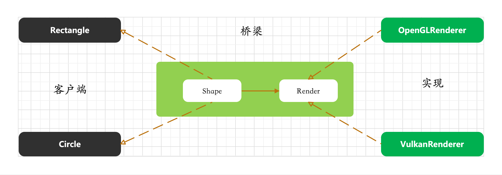

本文介绍23设计模式使用场景及其示例。
创建型设计模式主要用于对象的创建过程，旨在将对象的创建和使用分离，使得代码在创建对象时更加灵活、可维护且可复用。它关注的是对象创建的机制，通过隐藏对象创建的具体细节，提供了一种创建对象的统一方式，以满足不同场景下的需求。
单例模式适用于整个系统只有一个实例的场景，比如数据库连接池、线程池、系统配置信息管理等。确保在任何时候只有一个对象被创建来提供统一的访问点，避免资源浪费和不一致性。
1 2 3 4 5 6 7 8 9 10 11 12 13 14 15 16 17 18 19 20 21 22 23 24 25 26 27 28 29 30 31 32 33 34 35 36 37 38 39 40 41 42 43 44 45 46 47 48 49 50 51 52 53 54 55 56 57 58 59 use std::cell::RefCell;use std::sync::{Mutex, MutexGuard};use once_cell::sync::Lazy;#[derive(Debug, Clone, Default)] pub struct Connection { name: String , } pub struct DatabaseConnectionPool { connections: Vec <RefCell<Connection>>, } impl DatabaseConnectionPool { fn new (pool_size: usize ) -> DatabaseConnectionPool { DatabaseConnectionPool { connections: Vec ::with_capacity (pool_size), } } pub fn get_connection (&mut self ) -> Option <RefCell<Connection>> { let length = self .connections.len (); if length > 0 { Some (self .connections.remove (length - 1 )) } else { None } } pub fn release_connection (&mut self , connection: Connection) { self .connections.push (RefCell::new (connection)) } pub fn count (&self ) -> usize { self .connections.len () } } static GLOBAL_POOL: Lazy<Mutex<DatabaseConnectionPool>> = Lazy::new (|| Mutex::new (DatabaseConnectionPool::new (10 ))); pub fn get_pool_instance () -> MutexGuard<'static , DatabaseConnectionPool> { GLOBAL_POOL.lock ().unwrap () } fn main () { { let mut pool1 = get_pool_instance (); pool1.release_connection (Connection::default ()); println! ("Address of x: {:p}" , std::ptr::addr_of!(pool1)); } { let mut pool2 = get_pool_instance (); pool2.release_connection (Connection::default ()); println! ("Address of x: {:p}" , std::ptr::addr_of!(pool2)); } println! ("connections length: {}" , get_pool_instance ().count ()); }
这将输出：
Address of x: 0x41330ff5f8
Address of x: 0x41330ff678
connections length: 2
1 2 3 4 5 6 7 8 9 10 11 12 13 14 15 16 17 18 19 20 21 22 23 24 25 26 27 28 29 30 31 32 33 34 35 36 package mainimport "fmt" type DatabaseConnectionPool struct { connections []*Connection } type Connection struct {}var instance *DatabaseConnectionPoolfunc GetDatabaseConnectionPoolInstance () if instance == nil { instance = &DatabaseConnectionPool{ connections: make ([]*Connection, 10 ), } } return instance } func main () pool1 := GetDatabaseConnectionPoolInstance() pool2 := GetDatabaseConnectionPoolInstance() if pool1 == pool2 { fmt.Println("数据库连接池实例是相同的，单例模式生效" ) } else { fmt.Println("数据库连接池实例不同，单例模式未生效" ) } }
1 2 3 4 5 6 7 8 9 10 11 12 13 14 15 16 17 18 19 20 21 22 23 24 25 26 27 28 29 30 31 32 33 34 public class DatabaseConnectionPool { private static DatabaseConnectionPool instance = null ; private Connection[] connections; private DatabaseConnectionPool () { connections = new Connection [10 ]; } public static DatabaseConnectionPool getInstance () { if (instance == null ) { instance = new DatabaseConnectionPool (); } return instance; } public static void main (String[] args) { DatabaseConnectionPool pool1 = DatabaseConnectionPool.getInstance(); DatabaseConnectionPool pool2 = DatabaseConnectionPool.getInstance(); if (pool1 == pool2) { System.out.println("数据库连接池实例是相同的，单例模式生效" ); } else { System.out.println("数据库连接池实例不同，单例模式未生效" ); } } } class Connection {}
工厂设计模式核心是提供了一种创建对象的方式，将对象的创建和使用分离、屏蔽复杂的对象创建细节或者根据条件创建对象
工厂模式适用以下场景：
对象创建过程复杂：当创建一个对象需要进行复杂的初始化操作，如读取配置文件、连接数据库、进行复杂的计算等，使用工厂设计模式可以将这些复杂的创建过程封装在工厂类中，客户端只需从工厂获取创建好的对象即可。例如，创建一个数据库连接对象，可能需要配置数据库的各种参数、建立网络连接等复杂步骤，通过工厂模式可以让客户端简单地获取到可用的数据库连接对象。
根据不同条件创建不同类型对象：在某些应用场景中，需要根据不同的条件（如用户输入、系统配置等）创建不同类型的对象。比如在一个图形绘制应用中，根据用户选择的图形类型（圆形、矩形、三角形等）创建相应的图形对象，工厂模式可以根据传入的条件来决定创建哪种具体的图形对象。
工厂设计模式具有如下特点：
解耦对象创建和使用：客户端代码与对象的具体创建过程分离，降低了客户端代码对具体对象实现的依赖，使得代码的维护和扩展更加容易。如果对象的创建过程发生变化，只需要修改工厂类，而不需要在客户端代码中大量修改。
代码复用性高：工厂类可以被多个客户端代码复用，不同的客户端都可以通过同一个工厂类来获取所需的对象，提高了代码的复用程度。
便于对象管理：工厂模式可以对创建的对象进行统一管理，例如可以在工厂类中对创建的对象数量进行统计、对对象的生命周期进行控制等。
工厂设计模式遵循以下设计原则：
开闭原则：对扩展开放，对修改关闭。当需要添加新的对象类型时，只需创建新的具体工厂类或在现有工厂类中添加创建新对象的方法，而不需要修改客户端代码，使得系统能够方便地进行扩展。
依赖倒置原则：高层模块（客户端）不依赖于低层模块（具体对象的实现），而是依赖于抽象（工厂接口和抽象对象接口）。这样可以提高代码的灵活性，便于在不同的场景下替换不同的工厂类或具体对象实现。
链接
1 2 3 4 5 6 7 8 9 10 11 12 13 14 15 16 17 18 19 20 21 22 23 24 25 26 27 28 29 30 31 32 33 34 35 36 37 38 39 40 41 42 43 44 45 46 47 48 49 50 51 52 53 54 55 56 57 58 59 60 61 pub trait Shape { fn draw (&self ); } struct Circle { radius: f64 , } impl Shape for Circle { fn draw (&self ) { println! ("绘制一个半径为：{:.2}的圆形" , self .radius); } } struct Rectangle { width: f64 , length: f64 , } impl Shape for Rectangle { fn draw (&self ) { println! ( "绘制一个长:{:.2}，宽：{:.2}的长方形" , self .length, self .width ); } } pub trait Factory { fn create_shape (&self ) -> Box <dyn Shape>; } struct CircleFactory ;impl Factory for CircleFactory { fn create_shape (&self ) -> Box <dyn Shape> { Box ::new (Circle { radius: 1.0 }) } } struct RectangleFactory ;impl Factory for RectangleFactory { fn create_shape (&self ) -> Box <dyn Shape> { Box ::new (Rectangle { width: 1.0 , length: 3.0 , }) } } fn main () { let circle_factory = CircleFactory; let rectangle_factory = RectangleFactory; let circle = circle_factory.create_shape (); let rectangle = rectangle_factory.create_shape (); circle.draw (); rectangle.draw (); }
1 2 3 4 5 6 7 8 9 10 11 12 13 14 15 16 17 18 19 20 21 22 23 24 25 26 27 28 29 30 31 32 33 34 35 36 37 38 39 40 41 42 43 44 45 46 47 48 49 50 51 52 53 54 55 56 57 58 package mainimport "fmt" type Shape interface { Draw() } type Circle struct { radius float64 } func (c Circle) fmt.Printf("绘制一个半径为%.2f的圆形\n" , c.radius) } type Rectangle struct { width float64 height float64 } func (r Rectangle) fmt.Printf("绘制一个宽为%.2f，高为%.2f的矩形\n" , r.width, r.height) } type ShapeFactory interface { CreateShape() Shape } type CircleFactory struct {}func (cf CircleFactory) return Circle{radius: 5.0 } } type RectangleFactory struct {}func (rf RectangleFactory) return Rectangle{width: 4.0 , height: 6.0 } } func main () circleFactory := CircleFactory{} circleShape := circleFactory.CreateShape() circleShape.Draw() rectangleFactory := RectangleFactory{} rectangleShape := rectangleFactory.CreateShape() rectangleShape.Draw() } rectangleProduct.Use()
1 2 3 4 5 6 7 8 9 10 11 12 13 14 15 16 17 18 19 20 21 22 23 24 25 26 27 28 29 30 31 32 33 34 35 36 37 38 39 40 41 42 43 44 45 46 47 48 49 50 51 52 53 54 55 56 57 58 59 60 61 62 trait Shape { fn draw (&self) ; } struct Circle { radius: f64, } impl Shape for Circle { fn draw (&self) { println!("绘制一个半径为{}的圆形" , self.radius); } } struct Rectangle { width: f64, height: f64, } impl Shape for Rectangle { fn draw (&self) { println!("绘制一个宽为{}，高为{}的矩形" , self.width, self.height); } } trait ShapeFactory { fn create_shape (&self) -> Box<dyn Shape>; } struct CircleFactory; impl ShapeFactory for CircleFactory { fn create_shape (&self) -> Box<dyn Shape> { Box::new (Circle { radius: 5.0 }) } } struct RectangleFactory; impl ShapeFactory for RectangleFactory { fn create_shape (&self) -> Box<dyn Shape> { Box::new (Rectangle { width: 4.0 , height: 6.0 }) } } fn main () { let circle_factory = CircleFactory; let circle_shape = circle_factory.create_shape(); circle_shape.draw(); let rectangle_factory = RectangleFactory; let rectangle_shape = rectangle_factory.create_shape(); rectangle_shape.draw(); }
抽象工厂相比创建单个产品的工厂模式，提供了创建一系列相关或相互依赖的对象，在实际应用场景中多是用来创建一些列的产品 抽象工厂可以叫做高级工厂
如下是一些应用场景：
跨平台应用开发：例如开发一款图形界面应用程序，需要在不同操作系统（如Windows、Mac、Linux）上运行，每个操作系统的界面组件（如按钮、文本框、菜单等）外观和行为有所不同，但整体都属于界面组件这一系列产品。可以使用抽象工厂模式，为每个操作系统创建一个具体工厂，负责生产该平台对应的界面组件产品族；
数据库访问层：当应用程序需要支持多种数据库系统（如 MySQL、PostgreSQL、SQLite 等）时，对于每种数据库，都有相关的连接对象、命令对象、结果集对象等一系列数据库操作相关对象。通过抽象工厂模式，可为每种数据库创建一个具体工厂，专门生产该数据库所需的这一系列相关对象；
具有下面一些特点：
解耦对象创建和使用：客户端不需要了解具体产品对象的创建细节，只依赖于抽象工厂和抽象产品接口，使得代码的依赖关系更清晰，易于维护和扩展。
产品族的一致性：确保创建的一组相关产品对象（即产品族）在风格、行为等方面保持一致。例如，在跨平台 UI 场景中，由一个具体工厂创建的所有 UI 组件都适配于该平台的风格和规范。
易于切换产品族：如果要切换到不同的产品族（如从使用 Windows 平台的 UI 组件切换到 Mac 平台的 UI 组件），只需更换使用的具体工厂实例，而不需要对客户端代码中关于产品使用的部分进行大量修改。
遵循以下的设计原则：
依赖倒置原则：高层模块（客户端）不依赖于低层模块（具体工厂和具体产品）的具体实现，而是依赖于抽象（抽象工厂和抽象产品接口）。这样可以降低模块之间的耦合度，提高代码的灵活性和可维护性。
开闭原则：对扩展开放，对修改关闭。当需要添加新的产品族（如支持新的操作系统或数据库系统）时，只需创建新的具体工厂和对应的新的具体产品类，实现相应的抽象接口，而无需修改现有的客户端代码和已有的抽象工厂、抽象产品接口。
如下是抽象工厂模式的一个示例图：
1 2 3 4 5 6 7 8 9 10 11 12 13 14 15 16 17 18 19 20 21 22 23 24 25 26 27 28 29 30 31 32 33 34 35 36 37 38 39 40 41 42 43 44 45 46 47 48 49 50 51 52 53 54 55 56 57 58 59 60 61 62 63 64 65 66 67 68 69 70 71 72 73 74 75 76 77 78 79 80 81 82 83 84 85 86 87 88 89 90 91 92 93 94 95 trait Button { fn click (&self ); } struct WindowsButton ;impl Button for WindowsButton { fn click (&self ) { println! ("Windows按钮被点击" ); } } struct MacButton ;impl Button for MacButton { fn click (&self ) { println! ("Mac按钮被点击" ); } } trait TextBox { fn input_text (&self , text: &str ); } struct WindowsTextBox ;impl TextBox for WindowsTextBox { fn input_text (&self , text: &str ) { println! ("在Windows文本框中输入: {}" , text); } } struct MacTextBox ;impl TextBox for MacTextBox { fn input_text (&self , text: &str ) { println! ("在Mac文本框中输入: {}" , text); } } trait GUIFactory { fn create_button (&self ) -> Box <dyn Button>; fn create_text_box (&self ) -> Box <dyn TextBox>; } struct WindowsGUIFactory ;impl GUIFactory for WindowsGUIFactory { fn create_button (&self ) -> Box <dyn Button> { Box ::new (WindowsButton) } fn create_text_box (&self ) -> Box <dyn TextBox> { Box ::new (WindowsTextBox) } } struct MacGUIFactory ;impl GUIFactory for MacGUIFactory { fn create_button (&self ) -> Box <dyn Button> { Box ::new (MacButton) } fn create_text_box (&self ) -> Box <dyn TextBox> { Box ::new (MacTextBox) } } fn main () { let windows_factory = WindowsGUIFactory; let mac_factory = MacGUIFactory; let windows_button = windows_factory.create_button (); let windows_text_box = windows_factory.create_text_box (); let mac_button = mac_factory.create_button (); let mac_text_box = mac_factory.create_text_box (); windows_button.click (); windows_text_box.input_text ("Hello from Windows" ); mac_button.click (); mac_text_box.input_text ("Hello from Mac" ); }
1 2 3 4 5 6 7 8 9 10 11 12 13 14 15 16 17 18 19 20 21 22 23 24 25 26 27 28 29 30 31 32 33 34 35 36 37 38 39 40 41 42 43 44 45 46 47 48 49 50 51 52 53 54 55 56 57 58 59 60 61 62 63 64 65 66 67 68 69 70 71 72 73 74 75 76 77 78 79 80 81 82 83 84 85 86 87 package mainimport "fmt" type Button interface { Click() } type WindowsButton struct {}func (w *WindowsButton) fmt.Println("Windows按钮被点击" ) } type MacButton struct {}func (m *MacButton) fmt.Println("Mac按钮被点击" ) } type TextBox interface { InputText(text string ) } type WindowsTextBox struct {}func (w *WindowsTextBox) string ) { fmt.Println("在Windows文本框中输入: " , text) } type MacTextBox struct {}func (m *MacTextBox) string ) { fmt.Println("在Mac文本框中输入: " , text) } type GUIFactory interface { CreateButton() Button CreateTextBox() TextBox } type WindowsGUIFactory struct {}func (w *WindowsGUIFactory) return &WindowsButton{} } func (w *WindowsGUIFactory) return &WindowsTextBox{} } type MacGUIFactory struct {}func (m *MacGUIFactory) return &MacButton{} } func (m *MacGUIFactory) return &MacTextBox{} } func main () windowsFactory := &WindowsGUIFactory{} macFactory := &MacGUIFactory{} windowsButton := windowsFactory.CreateButton() windowsTextBox := windowsFactory.CreateTextBox() macButton := macFactory.CreateButton() macTextBox := macFactory.CreateTextBox() windowsButton.Click() windowsTextBox.InputText("Hello from Windows" ) macButton.Click() macTextBox.InputText("Hello from Mac" ) }
建造者设计核心是将一个复杂对象的构建过程与其表示分离，使得同样的构建过程可以创建不同的表示，例如，造汽车就是车轮、车身以及发动机等，但是豪车和普通车的工艺以及配件就是不一样 建造者 来具体实现这些步骤，最后通过指挥者 来协调建造者完成复杂对象的构建。
建造者设计模式适用场景举例：
复杂对象创建：当需要创建一个复杂对象，且该对象的创建过程涉及多个步骤或多个部件的组装时，比如创建一辆汽车，需要分别组装发动机、车身、轮胎等部件，就可以使用建造者设计模式。
配置对象生成：在软件配置管理中，对于一些具有多个可配置选项的复杂配置对象，如数据库连接配置对象，包含数据库类型、主机地址、端口号、用户名、密码等多个属性，使用建造者设计模式可以方便地按照不同需求构建出不同的配置对象。
建造者设计模式具有如下特点：
分离构建与表示：将对象的构建过程从其最终的表示形式中分离出来，使得构建过程可以被复用，并且可以通过不同的建造者创建出具有不同表示的同一类型对象。
逐步构建：允许按照特定的顺序逐步完成复杂对象的构建，每个建造者负责一个或多个特定的构建步骤，使得构建过程更加清晰和可控。
可扩展性：方便添加新的建造者来实现不同的构建方式，以创建出更多种类的复杂对象，而不需要修改指挥者和原有建造者的核心逻辑。
建造者设计模式遵循以下设计原则：
单一职责原则：每个建造者类只负责对象构建过程中的一部分工作，如专门负责安装发动机的建造者、负责安装车身的建造者等，使得每个类的职责更加单一明确。
开闭原则：对扩展开放，对修改关闭。当需要创建新类型的复杂对象或对现有对象的构建过程进行修改时，只需添加新的建造者类或修改现有建造者类的构建步骤，而不需要修改指挥者类和客户端代码。
如下是建造者模式的UML类图：
1 2 3 4 5 6 7 8 9 10 11 12 13 14 15 16 17 18 19 20 21 22 23 24 25 26 27 28 29 30 31 32 33 34 35 36 37 38 39 40 41 42 43 44 45 46 47 48 49 50 51 52 53 54 55 56 57 58 59 60 61 62 63 64 65 66 67 68 69 70 71 72 73 74 75 76 77 78 79 80 81 82 83 84 85 86 87 88 89 90 91 92 93 94 95 96 97 98 99 100 101 102 103 104 105 106 107 108 109 110 111 112 113 114 115 116 117 118 119 120 121 122 123 124 125 126 127 128 129 130 131 132 struct Car { engine: String , body: String , tires: String , } trait CarBuilder { fn build_engine (&mut self ) -> &mut Self ; fn build_body (&mut self ) -> &mut Self ; fn build_tires (&mut self ) -> &mut Self ; fn get_result (&self ) -> Car; } struct LuxuryCarBuilder { car: Car, } impl LuxuryCarBuilder { fn new () -> Self { LuxuryCarBuilder { car: Car { engine: String ::from ("高性能发动机" ), body: String ::from ("豪华车身" ), tires: String ::from ("高级轮胎" ), }, } } } impl CarBuilder for LuxuryCarBuilder { fn build_engine (&mut self ) -> &mut Self { self .car.engine = String ::from ("更强大的高性能发动机" ); self } fn build_body (&mut self ) -> &mut Self { self .car.body = String ::from ("更精致的豪华车身" ); self } fn build_tires (&mut self ) -> &mut Self { self .car.tires = String ::from ("更舒适的高级轮胎" ); self } fn get_result (&self ) -> Car { self .car.clone () } } struct RegularCarBuilder { car: Car, } impl RegularCarBuilder { fn new () -> Self { RegularCarBuilder { car: Car { engine: String ::from ("普通发动机" ), body: String ::from ("普通车身" ), tires: String ::from ("普通轮胎" ), }, } } } impl CarBuilder for RegularCarBuilder { fn build_engine (&mut self ) -> &mut Self { self .car.engine = String ::from ("稍强一些的普通发动机" ); self } fn build_body (&mut self ) -> &mut Self { self .car.body = String ::from ("稍好一些的普通车身" ); self } fn build_tires (&mut self ) -> &mut Self { self .car.tires = String ::from ("稍好一些的普通轮胎" ); self } fn get_result (&self ) -> Car { self .car.clone () } } struct Director { builder: Box <dyn CarBuilder>, } impl Director { fn new (builder: Box <dyn CarBuilder>) -> Self { Director { builder } } fn construct_car (&self ) -> Car { self .builder .build_engine () .build_body () .build_tires () .get_result () } } fn main () { let luxury_builder = Box ::new (LuxuryCarBuilder::new ()); let luxury_director = Director::new (luxury_builder); let luxury_car = luxury_director.construct_car (); println! ("豪华汽车配置：" ); println! ("发动机：{}" , luxury_car.engine); println! ("车身：{}" , luxury_car.body); println! ("轮胎：{}" , luxury_car.tires); let regular_builder = Box ::new (RegularCarBuilder::new ()); let regular_director = Director::new (regular_builder); let regular_car = regular_director.construct_car (); println! ("普通汽车配置：" ); println! ("发动机：{}" , regular_car.engine); println! ("车身：{}" , regular_car.body); println! ("轮胎：{}" , regular_car.tires); }
1 2 3 4 5 6 7 8 9 10 11 12 13 14 15 16 17 18 19 20 21 22 23 24 25 26 27 28 29 30 31 32 33 34 35 36 37 38 39 40 41 42 43 44 45 46 47 48 49 50 51 52 53 54 55 56 57 58 59 60 61 62 63 64 65 66 67 68 69 70 71 72 73 74 75 76 77 78 79 80 81 82 83 84 85 86 87 88 89 90 91 92 93 94 95 96 97 98 99 100 101 102 103 104 105 106 107 108 109 110 111 112 113 114 115 116 117 118 119 120 121 122 123 124 125 126 127 128 package mainimport "fmt" type Car struct { Engine string Body string Tires string } type CarBuilder interface { BuildEngine() CarBuilder BuildBody() CarBuilder BuildTires() CarBuilder GetResult() Car } type LuxuryCarBuilder struct { car Car } func NewLuxuryCarBuilder () return &LuxuryCarBuilder{ car: Car{ Engine: "高性能发动机" , Body: "豪华车身" , Tires: "高级轮胎" , }, } } func (l *LuxuryCarBuilder) l.car.Engine = "更强大的高性能发动机" return l } func (l *LuxuryCarBuilder) l.car.Body = "更精致的豪华车身" return l } func (l *LuxuryCarBuilder) l.car.Tires = "更舒适的高级轮胎" return l } func (l *LuxuryCarBuilder) return l.car } type RegularCarBuilder struct { car Car } func NewRegularCarBuilder () return &RegularCarBuilder{ car: Car{ Engine: "普通发动机" , Body: "普通车身" , Tires: "普通轮胎" , }, } } func (r *RegularCarBuilder) r.car.Engine = "稍强一些的普通发动机" return r } func (r *RegularCarBuilder) r.car.Body = "稍好一些的普通车身" return r } func (r *RegularCarBuilder) r.car.Tires = "稍好一些的普通轮胎" return r } func (r *RegularCarBuilder) return r.car } type Director struct { builder CarBuilder } func NewDirector (builder CarBuilder) return &Director{ builder: builder, } } func (d *Director) return d.builder. BuildEngine(). BuildBody(). BuildTires(). GetResult() } func main () luxuryBuilder := NewLuxuryCarBuilder() luxuryDirector := NewDirector(luxuryBuilder) luxuryCar := luxuryDirector.ConstructCar() fmt.Println("豪华汽车配置：" ) fmt.Println("发动机：" , luxuryCar.Engine) fmt.Println("车身：" , luxuryCar.Body) fmt.Println("轮胎：" , luxuryCar.Tires) regularBuilder := NewRegularCarBuilder() regularDirector := NewDirector(regularBuilder) regularCar := regularDirector.ConstructCar() fmt.Println("普通汽车配置：" ) fmt.Println("发动机：" , regularCar.Engine) fmt.Println("车身：" , regularCar.Body) fmt.Println("轮胎：" , regularCar.Tires) }
原型设计模式中的原型的含义是新对象的创建是通过复制已有的对象（原型）来完成，从而创建一个与原始对象相似的新对象，而不需要知道创建细节，这种模式适合于对象创建成本较高的场景
原型设计模式适用场景如下：
对象创建成本高：当创建一个对象的过程比较复杂，例如涉及到大量的计算、数据库查询、网络请求等操作，且需要频繁创建相似的对象时，使用原型设计模式可以通过复制已有对象来避免重复执行这些复杂的创建过程，从而提高效率。比如创建复杂的图形对象，每次从头开始创建图形并设置其属性可能很耗时，通过复制已创建好的图形原型并进行微调就可以快速得到新的图形对象。
动态配置对象：在一些需要根据不同场景动态生成相似对象的情况下，如根据用户的不同设置生成不同配置的系统设置对象，先创建一个基础的设置对象原型，然后根据用户的具体选择复制该原型并修改相应的属性，就可以快速生成符合用户需求的设置对象。
原型设计模式特点如下：
高效创建相似对象：无需重新执行复杂的对象创建过程，直接通过复制原型对象就能快速得到新的对象，节省了创建时间，尤其适用于创建成本高的对象。
灵活修改复制对象：复制得到的新对象可以独立于原型对象进行属性修改等操作，能够根据具体需求灵活调整新对象的特性，以满足不同的应用场景。
保持对象结构一致性：新创建的对象与原型对象在结构上基本相同，保证了对象体系的一致性，便于管理和使用。
原型设计模式遵循的设计原则如下：
开闭原则：原型模式确保对象的复制逻辑集中在对象自身，符合单一职责原则。。
依赖倒置原则：高层模块（如使用对象的客户端）不依赖于具体的对象创建方式（如通过构造函数或其他复杂方式），而是依赖于抽象的原型接口，这样使得代码更具灵活性，便于替换不同的原型实现。
下面是原型模式的UML类图：
1 2 3 4 5 6 7 8 9 10 11 12 13 14 15 16 17 18 19 20 21 22 23 24 25 26 27 28 29 30 31 32 33 34 35 trait Prototype { fn clone (&self ) -> Box <dyn Prototype>; } struct GraphicObject { color: String , size: (i32 , i32 ), } impl Prototype for GraphicObject { fn clone (&self ) -> Box <dyn Prototype> { Box ::new (GraphicObject { color: self .color.clone (), size: self .size, }) } } fn main () { let original_graphic = GraphicObject { color: String ::from ("red" ), size: (100 , 100 ), }; let cloned_graphic = original_graphic.clone (); println! ("原始图形颜色: {}" , original_graphic.color); println! ("原始图形大小: {:?}" , original_graphic.size); println! ("克隆图形颜色: {}" , cloned_graphic.color); println! ("克隆图形大小: {:?}" , cloned_graphic.size); }
1 2 3 4 5 6 7 8 9 10 11 12 13 14 15 16 17 18 19 20 21 22 23 24 25 26 27 28 29 30 31 32 33 34 35 36 37 package mainimport "fmt" type Prototype interface { Clone() Prototype } type GraphicObject struct { Color string Size [2 ]int } func (g *GraphicObject) return &GraphicObject{ Color: g.Color, Size: g.Size, } } func main () originalGraphic := GraphicObject{ Color: "red" , Size: [2 ]int {100 , 100 }, } clonedGraphic := originalGraphic.Clone() fmt.Println("原始图形颜色: " , originalGraphic.Color) fmt.Println("原始图形大小: " , originalGraphic.Size) fmt.Println("克隆图形颜色: " , clonedGraphic.Color) fmt.Println("克隆图形大小: " , clonedGraphic.Size) }
结构型设计模式主要用于处理对象之间的组合和关联关系，通过合理地组织对象之间的结构，使得系统更加稳定、灵活且易于维护。
适配器模式主要作用是将一个类的接口转换成客户期望的另一个接口，使得原本不兼容的类可以协同工作，就像出国时要带的转换插头，将其他地区的插座形态转换为国标形态，通常用于系统集成、第三方库使用场景
适配器模式适用以下场景：
系统集成：当需要将新开发的系统与现有遗留系统进行集成时，新系统和遗留系统的接口可能不兼容。例如，新开发的支付系统使用的是基于 RESTful API 的接口规范，而公司现有的财务系统使用的是基于 SOAP 协议的接口，通过适配器模式可以创建一个适配器，将新支付系统的接口适配成财务系统能够理解和处理的接口形式，从而实现两者的集成。
第三方库使用：在使用第三方库时，其提供的接口可能与项目中其他部分所期望的接口不一致。比如，项目中使用的图形绘制框架期望接收以某种特定格式（如结构体数组）表示的图形数据，而引入的一个第三方图形库返回的图形数据格式是对象链表，这时就可以利用适配器模式创建一个适配器类，将第三方库返回的数据格式转换为项目框架所期望的格式。
该模式具有以下特点：
接口转换：适配器模式的核心功能是实现接口的转换，让原本不兼容的接口能够相互适配，使得不同接口规范的类或系统可以协同工作。
复用性：一旦创建了合适的适配器，它可以在多个需要进行相同接口转换的场景中被复用，提高了代码的复用率。
解耦：通过适配器将不兼容的部分隔离开来，使得客户端代码不需要了解被适配对象的具体实现细节，降低了客户端与被适配对象之间的耦合度。
适配器模式遵循以下设计原则：
开闭原则：对扩展开放，对修改关闭。当需要适配新的不兼容接口时，只需创建新的适配器类来实现接口转换，而不需要修改客户端代码和被适配对象的原有实现。
依赖倒置原则：高层模块（客户端）不依赖于低层模块（被适配对象的具体实现），而是依赖于抽象（适配器接口和被适配对象的抽象接口，如果有的话）。这样可以提高代码的灵活性，便于在不同场景下替换不同的适配器或被适配对象。
以下是适配器模式的UML关系图，Adapter将Adapee转换为用于希望的Target：
1 2 3 4 5 6 7 8 9 10 11 12 13 14 15 16 17 18 19 20 21 22 23 24 25 26 27 28 29 30 31 32 33 34 35 36 37 38 39 40 41 42 43 44 45 46 47 trait Target { fn request (&self ) -> String ; } struct Adaptee { specific_request: String , } impl Adaptee { fn specific_request (&self ) -> String { self .specific_request.clone () } } struct Adapter { adaptee: Adaptee, } impl Adapter { fn new (adaptee: Adaptee) -> Self { Adapter { adaptee } } } impl Target for Adapter { fn request (&self ) -> String { let result = self .adaptee.specific_request (); format! ("Adapter: {}" , result) } } fn main () { let adaptee = Adaptee { specific_request: String ::from ("原始请求数据" ), }; let adapter = Adapter::new (adaptee); let result = adapter.request (); println! ("{}" , result); }
1 2 3 4 5 6 7 8 9 10 11 12 13 14 15 16 17 18 19 20 21 22 23 24 25 26 27 28 29 30 31 32 33 34 35 36 37 38 39 40 41 42 43 44 45 package mainimport "fmt" type Target interface { Request() string } type Adaptee struct { SpecificRequest string } func (a *Adaptee) string { return a.SpecificRequest } type Adapter struct { Adaptee *Adaptee } func (a *Adapter) return &Adapter{Adaptee: adaptee} } func (a *Adapter) string { result := a.Adaptee.SpecificRequest() return fmt.Sprintf("Adapter: %s" , result) } func main () adaptee := &Adaptee{ SpecificRequest: "原始请求数据" , } adapter := &Adapter{}.New(adaptee) result := adapter.Request() fmt.Println(result) }
桥接模式的含义是通过一个桥梁（抽象部分）来将客户端与实现部分分离开来，让他们能够独立在不同的方向上进行演化，使得在系统扩展或变化时，能够灵活地组合不同的抽象和实现，而不需要修改大量的现有代码
如下图所示，为了将不同的图形绘画出来，可以选择不同的技术，将图形（客户端）和具体的图形绘制技术（实现部分）抽象出来组成桥梁，这样客户端和实现就可以朝着两边持续进行演化：

桥接模式适用以下场景：
图形绘制系统：在图形绘制系统中，有不同类型的图形（如圆形、矩形、三角形等），并且每种图形可以有不同的绘制方式（如使用不同的图形库、不同的渲染算法等）。可以使用桥接模式，将图形的抽象概念（如形状接口）与具体的绘制实现（如不同的绘制算法类）分离，这样当需要添加新的图形类型或新的绘制方式时，只需要分别在对应的抽象和实现部分进行扩展，而不会影响到其他部分的代码。
跨平台应用开发：对于需要在不同操作系统平台（如 Windows、Mac、Linux）上运行的应用程序，并且在不同平台上有不同的实现方式（如窗口管理、文件系统操作等）。通过桥接模式，可以将应用程序的业务逻辑抽象（如界面布局、功能模块等）与具体的平台实现分离，使得在支持新的平台或对现有平台的实现进行修改时，能够更方便地进行操作，而不会对业务逻辑造成太大的影响。
桥接模式具有以下特点：
分离抽象和实现：将抽象部分与实现部分解耦，使得它们能够独立发展和变化，一方的改变不会直接影响到另一方，提高了代码的灵活性和可维护性。
可扩展性：方便添加新的抽象类型或新的实现方式，只需要按照桥接模式的结构创建新的类并实现相应的接口，就可以轻松地将新的抽象和实现组合在一起，而不需要对现有代码进行大规模的修改。
符合开闭原则：对扩展开放，对修改关闭。当有新的需求时，通过添加新的类来满足，而不是修改现有的核心代码，使得系统能够更好地适应变化。
该模式遵循以下设计原则：
开闭原则：如前面所述，在需要扩展系统功能时，通过添加新的抽象类或实现类来实现，而不修改现有代码，保证了系统对扩展开放，对修改关闭。
依赖倒置原则：高层模块（如使用桥接模式的客户端）不依赖于低层模块（具体的抽象和实现类）的具体实现，而是依赖于抽象（抽象类和接口）。这样可以提高代码的灵活性，便于在不同场景下替换不同的抽象和实现组合。
如下是示例代码的UML关系图：
1 2 3 4 5 6 7 8 9 10 11 12 13 14 15 16 17 18 19 20 21 22 23 24 25 26 27 28 29 30 31 32 33 34 35 36 37 38 39 40 41 42 43 44 45 46 47 48 49 50 51 52 53 54 55 56 57 58 59 60 61 62 63 64 65 66 67 68 69 70 71 72 73 74 75 76 77 78 79 80 81 82 83 84 85 86 use std::rc::Rc;trait Shape { fn draw (&self ); } struct Circle { renderer: Rc<dyn Renderer>, } impl Shape for Circle { fn draw (&self ) { self .renderer.render_circle (); } } struct Rectangle { renderer: Rc<dyn Renderer>, } impl Shape for Rectangle { fn draw (&self ) { self .renderer.render_rectangle (); } } trait Renderer { fn render_circle (&self ); fn render_rectangle (&self ); } struct OpenGLRenderer ;impl Renderer for OpenGLRenderer { fn render_circle (&self ) { println! ("使用OpenGL渲染圆形" ); } fn render_rectangle (&self ) { println! ("使用OpenGL渲染矩形" ); } } struct VulkanRenderer ;impl Renderer for VulkanRenderer { fn render_circle (&self ) { println! ("使用Vulkan渲染圆形" ); } fn render_rectangle (&self ) { println! ("使用Vulkan渲染矩形" ); } } fn main () { let opengl_renderer = Rc::new (OpenGLRenderer); let vulkan_renderer = Rc::new (VulkanRenderer); let circle_with_opengl = Circle { renderer: opengl_renderer.clone (), }; let rectangle_with_opengl = Rectangle { renderer: opengl_renderer.clone (), }; let circle_with_vulkan = Circle { renderer: vulkan_renderer.clone (), }; let rectangle_with_vulkan = Rectangle { renderer: vulkan_renderer.clone (), }; circle_with_opengl.draw (); rectangle_with_opengl.draw (); circle_with_vulkan.draw (); rectangle_with_vulkan.draw (); }
1 2 3 4 5 6 7 8 9 10 11 12 13 14 15 16 17 18 19 20 21 22 23 24 25 26 27 28 29 30 31 32 33 34 35 36 37 38 39 40 41 42 43 44 45 46 47 48 49 50 51 52 53 54 55 56 57 58 59 60 61 62 63 64 65 66 67 68 69 70 71 72 73 74 75 76 77 78 79 80 package mainimport "fmt" type Shape interface { Draw() } type Circle struct { Renderer Renderer } func (c *Circle) c.Renderer.RenderCircle() } type Rectangle struct { Renderer Renderer } func (r *Rectangle) r.Renderer.RenderRectangle() } type Renderer interface { RenderCircle() RenderRectangle() } type OpenGLRenderer struct {}func (o *OpenGLRenderer) fmt.Println("使用OpenGL渲染圆形" ) } func (o *OpenGLRenderer) fmt.Println("使用OpenGL渲染矩形" ) } type VulkanRenderer struct {}func (v *VulkanRenderer) fmt.Println("使用Vulkan渲染圆形" ) } func (v *VulkanRenderer) fmt.Println("使用Vulkan渲染矩形" ) } func main () openglRenderer := &OpenGLRenderer{} vulkanRenderer := &VulkanRenderer{} circleWithOpenGL := &Circle{ Renderer: openglRenderer, } rectangleWithOpenGL := &Rectangle{ Renderer: openglRenderer, } circleWithVulkan := &Circle{ Renderer: vulkanRenderer, } rectangleWithVulkan := &Rectangle{ Renderer: vulkanRenderer, } circleWithOpenGL.Draw() rectangleWithOpenGL.Draw() circleWithVulkan.Draw() rectangleWithVulkan.Draw() }
组合模式有着非常鲜明的特色，它将对象组合成树形结构来表示部分与整体的关系，其中单个对象形成的叶子节点和由单个对象共同组合成的树枝节点都会实现相同的接口，这使得客户端可以对它们一视同仁，常用于文件系统的表示以及树结构的表示
该模式具有以下的适用场景（但不局限于此）：
文件系统：文件系统是典型的树形结构，文件和文件夹可以看作是组合模式中的对象。文件相当于叶子节点，文件夹相当于组合节点，文件夹可以包含文件和其他文件夹。通过使用组合模式，在遍历文件系统、计算文件大小总和、权限管理等操作时，可以用统一的方式处理文件和文件夹，而不需要针对文件和文件夹分别编写不同的处理逻辑。
组织结构图：企业或组织的组织结构通常呈现出树形结构，员工可以看作是叶子节点，部门可以看作是组合节点，部门可以包含员工以及其他子部门。采用组合模式，在进行人员统计、权限分配、组织架构展示等操作时，能够以相同的方式对待员工和部门，简化了代码逻辑和处理流程。
该模式具有如下特点：
统一处理：客户端可以用相同的操作方式处理单个对象（叶子节点）和组合对象（树枝节点），无需关心对象的具体类型是单个还是组合的，提高了代码的简洁性和可维护性。
树形结构表示：以树形结构清晰地表示出 “部分 - 整体” 的层次关系，便于理解和管理复杂的对象关系，如文件系统中的文件与文件夹的嵌套关系、组织结构图中的员工与部门的隶属关系等。
递归处理：由于对象组合成树形结构，很多操作（如遍历、计算等）往往需要采用递归的方式进行，这种递归处理方式能够自然地适应组合模式的树形结构特点，有效地处理各级对象。
组合模式遵循以下设计原则：
开闭原则：对扩展开放，对修改关闭。当需要添加新的类型的对象（如在文件系统中新增一种特殊文件类型，或在组织结构图中新增一种特殊部门类型）时，只需创建新的类实现相应的接口或继承自相关基类，并按照组合模式的结构进行组合即可，无需修改现有的客户端代码和核心处理逻辑。
依赖倒置原则：高层模块（如进行文件系统操作或组织架构管理的客户端代码）不依赖于低层模块（具体的文件、文件夹、员工、部门等对象的实现）的具体实现，而是依赖于抽象（抽象的组件接口、文件或员工等的抽象类或接口）。这样可以提高代码的灵活性，便于在不同场景下替换不同的具体对象实现，而不影响客户端代码的正常运行。
如下是示例代码的UML示意图：
1 2 3 4 5 6 7 8 9 10 11 12 13 14 15 16 17 18 19 20 21 22 23 24 25 26 27 28 29 30 31 32 33 34 35 36 37 38 39 40 41 42 43 44 45 46 47 48 49 50 51 52 53 54 55 56 57 58 59 60 61 62 trait Component { fn operation (&self ); } struct File { name: String , } impl Component for File { fn operation (&self ) { println! ("正在处理文件: {}" , self .name); } } struct Folder { name: String , children: Vec <Box <dyn Component>>, } impl Component for Folder { fn operation (&self ) { println! ("正在处理文件夹: {}" , self .name); for child in &self .children { child.operation (); } } } fn main () { let file1 = File { name: String ::from ("file1.txt" ), }; let file2 = File { name: String ::from ("file2.txt" ), }; let folder1 = Folder { name: String ::from ("folder1" ), children: vec! [ Box ::new (file1), Box ::new (file2), ], }; let file3 = File { name: String ::from ("file3.txt" ), }; let folder2 = Folder { name: String ::from ("folder2" ), children: vec! [ Box ::new (folder1), Box ::new (file3), ], }; folder2.operation (); }
1 2 3 4 5 6 7 8 9 10 11 12 13 14 15 16 17 18 19 20 21 22 23 24 25 26 27 28 29 30 31 32 33 34 35 36 37 38 39 40 41 42 43 44 45 46 47 48 49 50 51 52 53 54 55 56 57 58 59 60 61 62 package mainimport "fmt" type Component interface { Operation() } type File struct { Name string } func (f *File) fmt.Printf("正在处理文件: %s\n" , f.Name) } type Folder struct { Name string Children []Component } func (f *Folder) fmt.Printf("正在处理文件夹: %s\n" , f.Name) for _, child := range f.Children { child.Operation() } } func main () file1 := &File{ Name: "file1.txt" , } file2 := &File{ Name: "file2.txt" , } folder1 := &Folder{ Name: "folder1" , Children: []Component{ file1, file2, }, } file3 := &File{ Name: "file3.txt" , } folder2 := &Folder{ Name: "folder2" , Children: []Component{ folder1, file3, }, } folder2.Operation() }
Python中的装饰器就是该模式的一个实现场景，装饰器设计模式允许在不改变原有对象结构和行为的基础上，动态地给对象添加额外的功能，通过将功能的扩展从对象本身的类中分离出来，使用装饰器类来包裹原始对象，从而实现对对象功能的逐步增强
该模式具有以下的应用场景：
输入输出流处理：在处理文件读写、网络数据传输等场景中，例如对文件读取操作，可能需要在基本的读取功能基础上，添加缓存功能以提高读取效率，或者添加加密功能以保证数据安全。可以使用装饰器模式，将缓存、加密等功能作为装饰器添加到基本的文件读取流对象上，而无需修改原有的文件读取类。
图形绘制扩展：在图形绘制系统中，对于基本的图形绘制对象，如绘制一个简单的圆形，可能后续需要添加额外的效果，比如给圆形添加阴影效果、发光效果等。通过装饰器模式，可以将这些额外效果的实现作为装饰器，动态地添加到基本的圆形绘制对象上，灵活地扩展图形的绘制功能。
该模式具有以下特点：
动态扩展功能：能够在运行时根据需要动态地给对象添加新的功能，而不是在编译时就确定好所有功能。这使得系统更加灵活，可以根据不同的使用场景和需求灵活组合各种功能。
保持对象接口一致性：装饰器类和被装饰的原始对象实现相同的接口，这样对于客户端来说，无论是使用原始对象还是经过装饰后的对象，调用方式都是一样的，不需要对客户端代码进行修改来适应装饰后的对象。
可叠加性：可以将多个装饰器依次应用到一个对象上，实现多种功能的叠加。例如，既可以给文件读取流添加缓存装饰器，又可以在其上再添加加密装饰器，从而实现既有缓存又有加密的文件读取功能。
遵循以下设计原则：
开闭原则：对扩展开放，对修改关闭。当需要添加新的功能时，只需创建新的装饰器类实现与原始对象相同的接口，并在装饰器类中实现新的功能逻辑，而不需要修改原始对象的类以及使用该对象的客户端代码。
单一职责原则：每个装饰器类只负责添加一种特定的功能，使得功能的扩展更加清晰和易于维护。例如，缓存装饰器只负责处理缓存相关的逻辑，加密装饰器只负责加密相关的逻辑。
如下是装饰器模式的UML类图，LoggingDecorator以及CachingDecorator这两个装饰器和被装饰的对象NetworkRequest一样都实现了相同的接口Component，这样在不改变Compinent内部逻辑的情况下就可以为它增加新的功能：
1 2 3 4 5 6 7 8 9 10 11 12 13 14 15 16 17 18 19 20 21 22 23 24 25 26 27 28 29 30 31 32 33 34 35 36 37 38 39 40 41 42 43 44 45 46 47 48 49 50 51 52 53 54 55 56 57 58 59 60 61 62 63 64 65 66 67 68 69 70 71 72 73 74 75 76 77 78 79 80 81 82 83 84 85 86 87 88 89 90 91 92 93 94 95 96 97 98 99 100 101 102 trait Component { fn execute (&mut self ) -> String ; fn get_cache_key (&self ) -> String ; } struct NetworkRequest { url: String , method: String , } impl Component for NetworkRequest { fn execute (&mut self ) -> String { format! ("正在执行网络请求：{} - {}" , self .method, self .url) } fn get_cache_key (&self ) -> String { format! ("{}-{}" , self .method, self .url) } } trait Decorator : Component { fn get_component (&self ) -> &dyn Component; } struct CachingDecorator { component: Box <dyn Component>, cache: std::collections::HashMap<String , String >, } impl Decorator for CachingDecorator { fn get_component (&self ) -> &dyn Component { self .component.as_ref () } } impl Component for CachingDecorator { fn execute (&mut self ) -> String { let mut result = String ::new (); let cache_key = self .component.get_cache_key (); if let Some (cached_result) = self .cache.get (&cache_key) { println! ("从缓存中获取结果：{}" , cached_result); } else { result = self .component.execute (); self .cache.insert (cache_key.clone (), result.clone ()); println! ("缓存新结果：{}" , result); } result } fn get_cache_key (&self ) -> String { self .component.get_cache_key () } } struct LoggingDecorator { component: Box <dyn Component>, } impl Decorator for LoggingDecorator { fn get_component (&self ) -> &dyn Component { self .component.as_ref () } } impl Component for LoggingDecorator { fn execute (&mut self ) -> String { println! ("开始执行操作，时间：{}" , chrono::Local::now ()); let result = self .component.execute (); println! ("操作执行完毕，时间：{}" , chrono::Local::now ()); result } fn get_cache_key (&self ) -> String { self .component.get_cache_key () } } fn main () { let network_request = NetworkRequest { url: "https://example.com/api/data" .to_string (), method: "GET" .to_string (), }; let cached_network_request = CachingDecorator { component: Box ::new (network_request), cache: std::collections::HashMap::new (), }; let mut logged_cached_network_request = LoggingDecorator { component: Box ::new (cached_network_request), }; logged_cached_network_request.execute (); }
这将输出：
开始执行操作，时间：2024-11-20 19:52:39.739845100 +08:00
缓存新结果：正在执行网络请求：GET - https://example.com/api/data
操作执行完毕，时间：2024-11-20 19:52:39.740418900 +08:00
1 2 3 4 5 6 7 8 9 10 11 12 13 14 15 16 17 18 19 20 21 22 23 24 25 26 27 28 29 30 31 32 33 34 35 36 37 38 39 40 41 42 43 44 45 46 47 48 49 50 51 52 53 54 55 56 57 58 59 60 61 62 63 64 65 66 67 68 69 70 71 72 73 74 75 76 77 78 79 80 81 82 83 package mainimport ( "fmt" "time" ) type Component interface { Execute() } type NetworkRequest struct { URL string Method string } func (n *NetworkRequest) fmt.Printf("正在执行网络请求：%s - %s\n" , n.Method, n.URL) } type Decorator interface { Component GetComponent() Component } type CachingDecorator struct { Component Component Cache map [string ]string } func (c *CachingDecorator) return c.Component } func (c *CachingDecorator) cacheKey := fmt.Sprintf("%v-%s" , c.Component.(*NetworkRequest).Method, c.Component.(*NetworkRequest).URL) if result, ok := c.Cache[cacheKey]; ok { fmt.Printf("从缓存中获取结果：%s\n" , result) } else { c.Component.Execute() result := "模拟网络请求结果" c.Cache[cacheKey] = result fmt.Printf("缓存新结果：%s\n" , result) } } type LoggingDecorator struct { Component Component } func (l *LoggingDecorator) return l.Component } func (l *LoggingDecorator) fmt.Printf("开始执行操作，时间：%v\n" , time.Now()) l.Component.Execute() fmt.Printf("操作执行完毕，时间：%v\n" , time.Now()) } func main () networkRequest := &NetworkRequest{ URL: "https://example.com/api/data" , Method: "GET" , } cachedNetworkRequest := &CachingDecorator{ Component: networkRequest, Cache: make (map [string ]string ), } loggedCachingNetworkRequest := &LoggingDecorator{ Component: cachedNetworkRequest, } loggedCachingNetworkRequest.Execute() }
外观模式也叫门面模式，其外观含义来源于建筑学中的“Facade”，表示建筑物的表面或者正面，我们看到的精美的建筑物的表面都将其内部的钢筋水泥等复杂结构都隐藏起来了（想起一句话：驴粪蛋子表面光）。在软件设计领域中，外观模式用于隐藏子系统内部的复杂性和细节，客户端只需要和外观接口进行交互，而不用知道这个外观背后子系统的复杂操作和相互关系，就如同为复杂的机器设备提供了一个简单易用的控制面板，用户通过控制面板上的几个按钮就能完成一系列复杂的操作，而不需要深入了解机器内部各个零部件的具体运作原理
该模式具有以下应用场景：
复杂系统集成：当需要将多个不同的子系统集成在一起使用时，这些子系统可能各自具有复杂的接口和交互逻辑。例如，在一个智能家居系统中，包含了照明系统、温度控制系统、安防系统等多个子系统，每个子系统都有自己的一套控制接口和操作方式。通过使用外观设计模式，可以创建一个智能家居外观类，为用户提供诸如 “开启家居模式”“关闭家居模式” 等简单统一的操作接口，在这些接口的实现中协调各个子系统的具体操作，使得用户无需分别了解每个子系统的详细控制方法就能方便地控制整个智能家居系统。
简化第三方库使用：在使用一些功能强大但接口复杂的第三方库时，为了让项目中的其他开发人员能够更轻松地使用这些库的功能，可以应用外观设计模式。比如，一个图像处理库可能提供了众多用于图像加载、处理、保存等的细粒度接口，但对于项目中只需要进行一些基本图像处理操作（如加载图像、调整亮度、保存图像）的开发人员来说，这些接口过于复杂。此时可以创建一个外观类，将这些基本操作封装成几个简单的方法，如 “简单处理图像” 方法，在这个方法内部调用图像处理库的相关接口来完成一系列操作，这样其他开发人员只需调用外观类的简单方法即可，无需深入了解图像处理库的复杂接口。
该模式具有以下特点：
简化接口：提供了一个简洁、统一的接口给客户端，隐藏了子系统的复杂性，降低了客户端使用子系统的难度，使得客户端代码更加简洁明了，易于理解和维护。
解耦客户端与子系统：客户端只依赖于外观类，而不直接依赖于子系统中的各个具体类，这样当子系统内部发生变化（如某个子系统的接口修改、新增或删除某个子系统等）时，只要外观类的接口保持不变，客户端代码通常不需要进行大量修改，提高了系统的可维护性和可扩展性。
封装子系统逻辑：在外观类中封装了子系统的复杂逻辑和交互过程，将原本分散在多个子系统中的操作整合在一起，按照一定的业务逻辑顺序进行调用，使得整个系统的业务流程更加清晰，便于管理和控制。
该模式遵循以下设计原则：
迪米特法则：只与你的直接朋友交流，不与“陌生人”交谈。外观模式通过提供一个简化的接口，减少了客户端与子系统之间的交互。
单一职责原则：外观类具有单一职责，即提供子系统的简化接口。
如下是外观模式代码示例的类图呈现，通过SmartHomeFacade这个门面提供的几个简单方法，就可以操作照明、温控以及安防系统，而不用详细了解这些系统如何实现：
1 2 3 4 5 6 7 8 9 10 11 12 13 14 15 16 17 18 19 20 21 22 23 24 25 26 27 28 29 30 31 32 33 34 35 36 37 38 39 40 41 42 43 44 45 46 47 48 49 50 51 52 53 54 55 56 57 58 59 60 61 62 63 64 65 66 67 68 69 70 71 72 73 74 75 76 77 78 79 80 81 82 83 84 85 86 87 88 89 90 91 92 93 94 95 96 97 98 99 100 101 102 103 104 105 106 107 108 109 struct LightingSystem { is_on: bool , } impl LightingSystem { fn new () -> Self { LightingSystem { is_on: false } } fn turn_on (&mut self ) { self .is_on = true ; println! ("照明系统已开启" ); } fn turn_off (&mut self ) { self .is_on = false ; println! ("照明系统已关闭" ); } } struct TemperatureControlSystem { current_temperature: f32 , target_temperature: f32 , } impl TemperatureControlSystem { fn new () -> Self { TemperatureControlSystem { current_temperature: 25.0 , target_temperature: 22.0 , } } fn set_target_temperature (&mut self , target: f32 ) { self .target_temperature = target; println! ("设置目标温度为 {}" , target); } fn adjust_temperature (&mut self ) { if self .current_temperature > self .target_temperature { println! ("温度控制系统正在降温" ); } else if self .current_temperature < self .target_temperature { println! ("温度控制系统正在升温" ); } else { println! ("温度已达到目标温度" ); } } } struct SecuritySystem { is_armed: bool , } impl SecuritySystem { fn new () -> Self { SecuritySystem { is_armed: false } } fn arm (&mut self ) { self .is_armed = true ; println! ("安防系统已设防" ); } fn disarm (&mut self ) { self .is_armed = false ; println! ("安防系统已撤防" ); } } struct SmartHomeFacade { lighting: LightingSystem, temperature: TemperatureControlSystem, security: SecuritySystem, } impl SmartHomeFacade { fn new () -> Self { SmartHomeFacade { lighting: LightingSystem::new (), temperature: TemperatureControlSystem::new (), security: SecuritySystem::new (), } } fn turn_on_home_mode (&mut self ) { self .lighting.turn_on (); self .temperature.set_target_temperature (22.0 ); self .security.arm (); } fn turn_off_home_mode (&mut self ) { self .lighting.turn_off (); self .temperature.set_target_temperature (25.0 ); self .security.disarm (); } } fn main () { let mut smart_home = SmartHomeFacade::new (); smart_home.turn_on_home_mode (); smart_home.turn_off_home_mode (); }
1 2 3 4 5 6 7 8 9 10 11 12 13 14 15 16 17 18 19 20 21 22 23 24 25 26 27 28 29 30 31 32 33 34 35 36 37 38 39 40 41 42 43 44 45 46 47 48 49 50 51 52 53 54 55 56 57 58 59 60 61 62 63 64 65 66 67 68 69 70 71 72 73 74 75 76 77 78 79 80 81 82 83 84 85 86 87 88 89 90 91 92 93 94 95 96 97 98 99 100 101 102 103 104 105 package mainimport "fmt" type LightingSystem struct { IsOn bool } func NewLightingSystem () return &LightingSystem{IsOn: false } } func (l *LightingSystem) l.IsOn = true fmt.Println("照明系统已开启" ) } func (l *LightingSystem) l.IsOn = false fmt.Println("照明系统已关闭" ) } type TemperatureControlSystem struct { CurrentTemperature float32 TargetTemperature float32 } func NewTemperatureControlSystem () return &TemperatureControlSystem{ CurrentTemperature: 25.0 , TargetTemperature: 22.0 , } } func (t *TemperatureControlSystem) float32 ) { t.TargetTemperature = target fmt.Println("设置目标温度为" , target) } func (t *TemperatureControlSystem) if t.CurrentTemperature > t.TargetTemperature { fmt.Println("温度控制系统正在降温" ) } else if t.CurrentTemperature < t.TargetTemperature { fmt.Println("温度控制系统正在升温" ) } else { fmt.Println("温度已达到目标温度" ) } } type SecuritySystem struct { IsArmed bool } func NewSecuritySystem () return &SecuritySystem{IsArmed: false } } func (s *SecuritySystem) s.IsArmed = true fmt.Println("安防系统已设防" ) } func (s *SecuritySystem) s.IsArmed = false fmt.Println("安防System已撤防" ) } type SmartHomeFacade struct { Lighting *LightingSystem Temperature *TemperatureControlSystem Security *SecuritySystem } func NewSmartHomeFacade () return &SmartHomeFacade{ Lighting: NewLightingSystem(), Temperature: NewTemperatureControlSystem(), Security: NewSecuritySystem(), } } func (s *SmartHomeFacade) s.Lighting.TurnOn() s.Temperature.SetTargetTemperature(22.0 ) s.Security.Arm() } func (s *SmartHomeFacade) s.Lighting.TurnOff() s.Temperature.SetTargetTemperature(25.0 ) s.Security.Disarm() } func main () smartHome := NewSmartHomeFacade() smartHome.TurnOnHomeMode() smartHome.TurnOffHomeMode() }
享元模式的核心思想通过共享对象来减少内存使用以提高性能，在应用上将对象分为内部状态和外部状态，内部状态可共享，外部状态依赖具体场景变化，过在运行时将外部状态传递给共享对象来实现不同场景下的特定功能。这样可以避免创建大量相似的对象，而是共享那些具有相同内部状态的对象，从而节省内存空间。例如，游戏地图中的草，长得都一样，只是位置不一样，有些在河道，有些在河边，草的颜色、形态就是对象的内部状态，草的位置就是外部状态
该模式具有以下应用场景：
图形绘制系统：在图形绘制应用中，比如绘制一幅地图，地图上可能有大量相同类型的图形元素，如众多的树木图标、建筑物图标等。这些图标在外观和基本属性上是相同的（内部状态相同），只是在地图中的位置等信息不同（外部状态不同）。使用享元设计模式，可以创建一个图形元素的享元对象池，将相同类型的图形元素共享使用，只在绘制时根据具体位置等外部状态信息进行相应的绘制操作，大大减少了内存中图形对象的数量，提高了绘制效率。
文本处理系统：在处理文档排版等文本处理任务时，可能会频繁使用到一些相同样式的字符格式，如某种字体、字号、颜色的文字。这些具有相同样式的文字可以看作是具有相同内部状态的对象，而它们在文档中的具体位置则是外部状态。通过享元设计模式，创建一个字符格式的享元对象池，共享这些相同样式的字符格式对象，在排版时根据文字在文档中的具体位置等外部状态来应用相应的格式，既能节省内存，又能提高文本处理的效率。
该模式具有以下特点：
共享对象：通过识别对象可共享的内部状态，将具有相同内部状态的对象进行共享，避免了重复创建大量相似对象，有效减少了内存占用。
分离状态：明确区分对象的内部状态和外部状态，内部状态存储在共享对象中，外部状态在运行时传递给共享对象，使得共享对象能够根据不同的外部状态实现多样化的功能。
提高性能：由于减少了对象的创建数量，降低了内存开销，同时在某些情况下（如频繁创建和销毁相似对象的场景）还能减少对象创建和销毁的时间开销，从而提高了系统的整体性能。
遵循以下设计原则：
单一职责原则：享元模式通过分离内部状态和外部状态，使得享元对象只负责内部状态的管理，符合单一职责原则。
开闭原则：享元模式通过扩展内部状态来适应新的需求，而不需要修改现有的享元对象，符合开闭原则。
以下是享元模式代码示意图的UML类图，通过享元工厂FlyweightFactory来管理享元对象，在客户端代码中将不同的Flyweight部署到不同的位置：
1 2 3 4 5 6 7 8 9 10 11 12 13 14 15 16 17 18 19 20 21 22 23 24 25 26 27 28 29 30 31 32 33 34 35 36 37 38 39 40 41 42 43 44 45 46 47 48 49 50 51 52 53 54 55 56 57 58 59 60 61 use std::collections::HashMap;trait Flyweight { fn operation (&self , extrinsic_state: &str ) -> (); } struct GraphicElementFlyweight { internal_state: String , } impl Flyweight for GraphicElementFlyweight { fn operation (&self , extrinsic_state: &str ) -> () { println! ( "使用内部状态 {} 并结合外部状态 {} 进行图形元素操作" , self .internal_state, extrinsic_state ); } } struct FlyweightFactory { flyweights: HashMap<String , Box <dyn Flyweight>>, } impl FlyweightFactory { fn new () -> Self { FlyweightFactory { flyweights: HashMap::new (), } } fn get_flyweight (&mut self , key: &str ) -> &Box <dyn Flyweight> { self .flyweights.entry (key.to_string ()).or_insert (match key { "tree" => Box ::new (GraphicElementFlyweight { internal_state: "绿色圆形图标" .to_string (), }), "building" => Box ::new (GraphicElementFlyweight { internal_state: "灰色矩形图标" .to_string (), }), _ => panic! ("未知的享元对象类型" ), }) } } fn main () { let mut factory = FlyweightFactory::new (); let tree_flyweight = factory.get_flyweight ("tree" ); tree_flyweight.operation ("地图左上角位置" ); let building_flyweight = factory.get_flyweight ("building" ); building_flyweight.operation ("地图右下角位置" ); let another_tree_flyweight = factory.get_flyweight ("tree" ); another_tree_flyweight.operation ("地图右上角位置" ); }
1 2 3 4 5 6 7 8 9 10 11 12 13 14 15 16 17 18 19 20 21 22 23 24 25 26 27 28 29 30 31 32 33 34 35 36 37 38 39 40 41 42 43 44 45 46 47 48 49 50 51 52 53 54 55 56 57 58 59 60 61 62 63 64 65 66 67 68 69 70 71 72 73 74 75 76 77 package mainimport ( "fmt" "sync" ) type Flyweight interface { Operation(extrinsicState string ) } type GraphicElementFlyweight struct { InternalState string } func (g *GraphicElementFlyweight) string ) { fmt.Printf( "使用内部状态 %s 并结合外部状态 %s 进行图形元素操作\n" , g.InternalState, extrinsicState, ) } type FlyweightFactory struct { flyweights map [string ]Flyweight mutex sync.Mutex } func NewFlyweightFactory () return &FlyweightFactory{ flyweights: make (map [string ]Flyweight), } } func (f *FlyweightFactory) string ) Flyweight { f.mutex.Lock() defer f.mutex.Unlock() if flyweight, ok := f.flyweights[key]; ok { return flyweight } else { var newFlyweight Flyweight switch key { case "tree" : newFlyweight = &GraphicElementFlyweight{ InternalState: "绿色圆形图标" , } case "building" : newFlyweight = &GraphicElementFlyweight{ InternalState: "灰色矩形图标" , } default : panic ("未知的享元对象类型" ) } f.flyweights[key] = newFlyweight return newFlyweight } } func main () factory := NewFlyweightFactory() treeFlyweight := factory.GetFlyweight("tree" ) treeFlyweight.Operation("地图左上角位置" ) buildingFlyweight := factory.GetFlyweight("building" ) buildingFlyweight.Operation("地图右下角位置" ) anotherTreeFlyweight := factory.GetFlyweight("tree" ) anotherTreeFlyweight.Operation("地图右上角位置" ) }
代理模式为其他对象提供一种代理以控制对这个对象的访问，代理对象和被代理对象通常实现相同的接口，代理对象可以在客户端和被代理对象之间起到中介的作用，在访问被代理对象之前或之后执行一些额外的操作，比如权限验证、懒加载、缓存等，而客户端无需知道它所访问的是代理对象还是被代理对象本身
该模式具有以下的应用场景：
远程代理：在分布式系统中，当客户端需要访问位于远程服务器上的对象时，由于网络等因素，直接访问可能存在困难或效率低下。例如，在一个分布式数据库系统中，客户端位于本地机器，而数据库服务器在远程的数据中心。可以使用远程代理模式，在客户端本地创建一个远程数据库对象的代理，客户端通过这个代理与远程数据库进行交互。代理负责处理网络通信、数据序列化和反序列化等操作，使得客户端可以像访问本地对象一样方便地访问远程数据库，同时隐藏了远程访问的复杂性。
虚拟代理（懒加载）：当创建一个对象的成本很高（如加载大量数据、初始化复杂资源等），但并不是每次都需要立即使用该对象时，可以使用虚拟代理实现懒加载。比如，在一个图像浏览应用中，可能有大量的高清图片，一次性加载所有图片会占用大量内存且可能导致启动缓慢。此时可以为每张图片创建一个虚拟代理，当用户真正需要查看某张图片时，代理才去加载真正的图片对象，在此之前只占用很少的内存来保存代理对象自身的信息，从而提高应用的启动速度和内存使用效率。
保护代理（权限验证）：用于控制对特定对象的访问权限。例如，在一个企业内部的文件管理系统中，有一些敏感文件只有特定权限的用户才能访问。可以创建保护代理对象，在用户请求访问文件时，代理首先进行权限验证，只有验证通过的用户才能真正访问到被代理的文件对象，这样可以有效地保护敏感资源免受未授权访问。
该模式具有以下特点：
中介作用：代理对象作为客户端和被代理对象之间的中介，客户端通过代理对象来间接访问被代理对象，代理可以在中间执行一些额外的操作来增强或控制访问过程。
接口一致性：代理对象和被代理对象通常实现相同的接口，这使得客户端在使用时无需区分是直接访问被代理对象还是通过代理访问，保证了客户端代码的简洁性和可维护性，客户端可以以相同的方式调用代理和被代理对象的方法。
功能增强：可以在代理对象中添加额外的功能，如前面提到的权限验证、懒加载、缓存等功能，而不需要修改被代理对象本身的代码，从而实现对被代理对象功能的扩展和优化。
该模式遵循以下设计原则：
开闭原则：对扩展开放，对修改封闭。可以通过添加新的代理类来扩展功能，而不需要修改实际对象的代码。
单一职责原则：代理对象应该只有一个职责，即代理对实际对象的访问，并可能添加额外的功能。
如下的代码中，代理对象（Proxy）和被代理对象（RealSubject）都实现了相同的接口Subject，但是Proxy增加了自己的一些方法，可以在调用request方法的前后做一些记录操作。
1 2 3 4 5 6 7 8 9 10 11 12 13 14 15 16 17 18 19 20 21 22 23 24 25 26 27 28 29 30 31 32 33 34 35 36 37 38 39 40 41 42 43 44 45 46 47 48 49 trait Subject { fn request (&self ); } struct RealSubject { name: String , } impl Subject for RealSubject { fn request (&self ) { println! ("RealSubject: Handling request for {}" , self .name); } } struct Proxy <T: Subject> { real_subject: T, } impl <T: Subject> Proxy<T> { fn new (real_subject: T) -> Self { Self { real_subject } } fn before_request (&self ) { println! ("before request" ); } fn after_request (&self ) { println! ("after request" ); } } impl <T: Subject> Subject for Proxy <T> { fn request (&self ) { self .before_request (); self .real_subject.request (); self .after_request (); } } fn main () { let mut proxy = Proxy::new (RealSubject { name: String ::from ("" ), }); proxy.request (); }
1 2 3 4 5 6 7 8 9 10 11 12 13 14 15 16 17 18 19 20 21 22 23 24 25 26 27 28 29 30 31 32 33 34 35 36 37 38 39 40 41 42 43 44 45 46 47 48 49 50 51 52 53 54 55 56 57 58 59 60 61 62 63 64 65 66 67 68 69 70 71 72 73 package mainimport "fmt" type Subject interface { Request() } type RealSubject struct { Data string } func (r *RealSubject) fmt.Printf("真正的对象处理请求，数据: %s\n" , r.Data) } type Proxy struct { RealSubject Subject HasPermission bool } func NewProxy () return &Proxy{ RealSubject: nil , HasPermission: false , } } func (p *Proxy) bool ) { p.HasPermission = permission } func (p *Proxy) if p.RealSubject == nil { p.RealSubject = &RealSubject{ Data: "一些重要数据" , } } } func (p *Proxy) if p.HasPermission { if p.RealSubject != nil { p.RealSubject.Request() } else { p.LoadRealSubject() if p.RealSubject != nil { p.RealSubject.Request() } } } else { fmt.Println("没有权限访问" ) } } func main () proxy := NewProxy() proxy.Request() proxy.SetPermission(true ) proxy.Request() }
行为型设计模式主要用于处理对象之间的交互和职责分配，关注的是对象的行为和它们之间的通信方式，以实现更加灵活和可维护的系统行为。
责任链模式主要关注这个链字，它将请求的发送者和接收者解耦，让多个对象都有机会处理请求，将这些对象连接成一条链，请求沿着这条链传递，直到有一个对象处理它为止。每个对象在接收到请求时，都可以决定是自己处理该请求还是将其传递给链上的下一个对象，WEB请求中的各种中间件就是使用了该设计模式
该模式具有以下应用场景：
事件处理系统：在图形用户界面（GUI）开发中，比如一个窗口应用程序，会有各种各样的事件发生，如鼠标点击、键盘按键按下等。不同的组件可能对不同类型的事件感兴趣并进行处理。可以使用责任链模式，将各个组件按照一定的顺序连接成责任链，当一个事件发生时，从链的开头开始传递该事件，每个组件检查是否是自己能处理的事件类型，如果是则处理，否则传递给下一个组件，直到事件被处理或者到达链的末尾。
工作流审批系统：在企业的业务流程中，对于一些重要的业务操作，如请假申请、费用报销等，往往需要经过多个层级的审批。可以构建责任链模式，每个审批层级作为链上的一个节点，请假申请或费用报销请求从链的起始节点（如员工直属上级）开始传递，每个审批人根据自己的权限和规则决定是否批准该请求，如果不批准则传递给下一个审批层级，直到请求被批准或者到达链的最后审批层级（如公司高层领导）。
日志过滤系统：在一个大型的软件系统中，会产生大量的日志信息，不同级别的日志可能需要不同的处理方式，比如一些调试日志可能只在开发环境中显示，而错误日志需要记录到文件并发送通知给运维人员。通过责任链模式，可以将不同的日志过滤器（如按级别过滤、按模块过滤等）连接成链，日志消息从链的一端传入，依次经过各个过滤器，根据过滤器的规则决定是记录、丢弃还是进一步传递该日志消息。
该模式具有以下特点：
解耦请求发送者和接收者：请求的发送者不需要知道具体哪个对象会处理它的请求，只需要将请求发送到责任链的开头即可，而接收者（链上的各个对象）也不需要知道请求的原始发送者是谁，它们只关心是否能处理接收到的请求以及如何处理。
动态组合处理链：可以根据具体的业务需求灵活地组合和调整责任链上的对象顺序和类型，添加或删除链上的某个节点都比较方便，无需对整个系统进行大规模的修改，从而提高了系统的可扩展性。
处理灵活性：每个节点在接收到请求时都有自主决定是否处理的权利，这使得对于不同类型的请求可以有不同的处理路径，同一个请求在不同的业务场景或配置下可能会被不同的节点处理，增加了处理的灵活性。
该模式遵循以下设计原则：
开闭原则：对扩展开放，对修改关闭。当需要添加新的处理节点（如在事件处理系统中添加新的组件来处理新类型的事件，或在工作流审批系统中新增一个审批层级）时，只需创建新的类实现相应的接口并将其插入到责任链中合适的位置即可，无需修改现有节点的代码以及请求发送者的代码。
单一职责原则：链上的每个节点通常只负责处理一种特定类型的请求或执行一种特定的功能，使得每个节点的职责明确，便于代码的维护和理解，降低了代码的复杂性。
如下是责任链设计模式示例代码类图：
1 2 3 4 5 6 7 8 9 10 11 12 13 14 15 16 17 18 19 20 21 22 23 24 25 26 27 28 29 30 31 32 33 34 35 36 37 38 39 40 41 42 43 44 45 46 47 48 49 50 51 52 trait Handler { fn set_next (&mut self , handler: Box <dyn Handler>); fn handle_request (&self , request: &str ); } struct ConcreteHandlerA { next_handler: Option <Box <dyn Handler>>, } impl Handler for ConcreteHandlerA { fn set_next (&mut self , handler: Box <dyn Handler>) { self .next_handler = Some (handler); } fn handle_request (&self , request: &str ) { println! ("ConcreteHandlerA处理请求: {}" , request); if let Some (next_handler) = &self .next_handler { next_handler.handle_request (request) } } } struct ConcreteHandlerB { next_handler: Option <Box <dyn Handler>>, } impl Handler for ConcreteHandlerB { fn set_next (&mut self , handler: Box <dyn Handler>) { self .next_handler = Some (handler); } fn handle_request (&self , request: &str ) { println! ("ConcreteHandlerB处理请求: {}" , request); if let Some (next_handler) = &self .next_handler { next_handler.handle_request (request) } } } fn main () { let mut handler_a = ConcreteHandlerA { next_handler: None }; let mut handler_b = ConcreteHandlerB { next_handler: None }; handler_a.set_next (Box ::new (handler_b)); handler_a.handle_request ("请求1" ); handler_a.handle_request ("请求2" ); }
1 2 3 4 5 6 7 8 9 10 11 12 13 14 15 16 17 18 19 20 21 22 23 24 25 26 27 28 29 30 31 32 33 34 35 36 37 38 39 40 41 42 43 44 45 46 47 48 49 50 51 52 53 54 55 package mainimport ( "fmt" ) type Handler interface { SetNext(handler Handler) HandleRequest(request string ) } type ConcreteHandlerA struct { NextHandler Handler } func (c *ConcreteHandlerA) c.NextHandler = handler } func (c *ConcreteHandlerA) string ) { fmt.Printf("ConcreteHandlerA处理请求: %s\n" , request) if c.NextHandler != nil { c.NextHandler.HandleRequest(request) } } type ConcreteHandlerB struct { NextHandler Handler } func (c *ConcreteHandlerB) c.NextHandler = handler } func (c *ConcreteHandlerB) string ) { fmt.Printf("ConcreteHandlerB处理请求: %s\n" , request) if c.NextHandler != nil { c.NextHandler.HandleRequest(request) } } func main () handlerA := &ConcreteHandlerA{} handlerB := &ConcreteHandlerB{} handlerA.SetNext(handlerB) handlerA.HandleRequest("请求1" ) handlerA.HandleRequest("请求2" ) }
命令模式会把对一个对象的操作封装成一个对象，从而使用户可以用不同的参数将对象参数化，将请求的发送者和接收者解耦。请求的发送者只需要知道如何发出请求（调用命令对象的执行方法），而不需要知道具体由谁来处理这个请求以及如何处理；请求的接收者也不需要知道请求是由谁发出的，只专注于执行具体的任务。该设计模式通常用于需要排队或者支持撤销的场景中
该模式具有以下的应用场景：
绘图软件：在绘图软件中，用户可以进行各种操作，如画直线、画圆、填充颜色等。可以将每个操作都封装成一个命令对象，当用户点击相应的菜单按钮或工具图标时，就相当于发送了一个命令，命令对象会负责调用绘图引擎等相关接收者来执行具体的绘图动作。这样，不同的用户操作可以方便地被记录、撤销、重做等，通过维护一个命令历史列表，就可以轻松实现这些功能。
订单处理系统：在电商平台的订单处理流程中，有下单、取消订单、发货、退款等多种操作。将这些操作都设计成命令对象，订单管理系统作为请求的发送者，只需要调用相应的命令对象的执行方法即可触发对应的订单处理动作，而具体的处理逻辑由各个命令对象对应的接收者（如库存管理系统、物流系统、财务系统等）来完成。这样可以灵活地组合和扩展不同的订单处理流程，并且方便对操作进行日志记录和审计。
设备控制系统：在智能家居系统或工业自动化控制系统中，对于各种设备（如灯光、空调、电机等）有不同的控制操作，如打开灯光、调节空调温度、启动电机等。可以把这些控制操作封装成命令对象，控制中心作为发送者，通过发送不同的命令来控制设备的运行状态，设备本身或其对应的控制模块作为接收者执行具体的控制动作。这种方式使得控制逻辑更加清晰，便于添加新的设备控制命令和对现有命令进行修改。
该模式具有以下特点：
解耦请求发送者和接收者：发送者和接收者之间通过命令对象进行间接交互，发送者不需要了解接收者的具体实现细节，接收者也不需要知道发送者的情况，双方的耦合度大大降低，使得系统的可维护性和扩展性更好。
可实现操作的参数化和排队执行：可以将不同的请求封装成不同的命令对象，并且可以对这些命令对象进行参数化设置（如设置绘图的起点和终点、订单操作的相关参数等）。同时，还可以将多个命令对象放入一个队列中，按照一定的顺序依次执行，实现操作的排队执行，这在一些需要批量处理操作或按照特定顺序执行操作的场景中非常有用。
支持撤销和重做功能：由于命令对象记录了具体的操作以及相关参数，通过维护一个命令历史列表，可以方便地实现撤销和重做功能。只需要在列表中找到对应的命令对象，根据其类型和参数反向执行或再次执行相应的操作即可。
该模式遵循以下设计原则：
开闭原则：对扩展开放，对修改关闭。当需要添加新的操作（如在绘图软件中新增一种绘图工具，或在订单处理系统中新增一种订单处理流程）时，只需创建新的命令类并实现相应的接口，然后将其集成到系统中即可，不需要修改现有的请求发送者和接收者的代码。
单一职责原则：每个命令类只负责封装一个特定的操作及其相关逻辑，使得代码的职责更加清晰，便于理解和维护。例如，画直线的命令类只专注于实现画直线的操作逻辑，取消订单的命令类只负责处理取消订单的相关事宜。
如下的示例中，LightOnCommand和LightOffCommand已经将灯的开关操作封装为对象，使用者只要使用这两个对象即可完成灯的操作，不用关心灯的开关具体需要调用什么方法，如果有很多灯需要操作，则可以将他们放入队列中逐条处理：
1 2 3 4 5 6 7 8 9 10 11 12 13 14 15 16 17 18 19 20 21 22 23 24 25 26 27 28 29 30 31 32 33 34 35 36 37 38 39 40 41 42 43 44 45 46 47 48 49 50 51 52 53 54 55 56 57 58 59 60 61 62 63 64 65 66 67 68 69 70 71 72 73 74 75 76 77 78 79 use std::cell::RefCell;use std::rc::Rc;trait Command { fn execute (&self ); } struct Light { power: bool , } impl Light { fn on (&mut self ) { self .power = true ; println! ("Light is on" ); } fn off (&mut self ) { self .power = false ; println! ("Light is off" ); } } struct LightOnCommand { light: Rc<RefCell<Light>>, } impl Command for LightOnCommand { fn execute (&self ) { self .light.borrow_mut ().on (); } } struct LightOffCommand { light: Rc<RefCell<Light>>, } impl Command for LightOffCommand { fn execute (&self ) { self .light.borrow_mut ().off (); } } struct RemoteControl { commands: Vec <Box <dyn Command>>, } impl RemoteControl { fn new () -> RemoteControl { RemoteControl { commands: Vec ::new (), } } fn add_command (&mut self , command: Box <dyn Command>) { self .commands.push (command); } fn press_button (&self , index: usize ) { if let Some (command) = self .commands.get (index) { command.execute (); } } } fn main () { let light = Rc::new (RefCell::new (Light { power: false })); let mut remote = RemoteControl::new (); remote.add_command (Box ::new (LightOnCommand { light: Rc::clone (&light), })); remote.add_command (Box ::new (LightOffCommand { light: Rc::clone (&light), })); remote.press_button (0 ); remote.press_button (1 ); }
1 2 3 4 5 6 7 8 9 10 11 12 13 14 15 16 17 18 19 20 21 22 23 24 25 26 27 28 29 30 31 32 33 34 35 36 37 38 39 40 41 42 43 44 45 46 47 48 49 50 51 52 53 54 55 56 57 58 59 60 61 62 63 64 package mainimport "fmt" type Command interface { Execute() } type Light struct { power bool } func (l *Light) l.power = true fmt.Println("Light is on" ) } func (l *Light) l.power = false fmt.Println("Light is off" ) } type LightOnCommand struct { light *Light } func (loc *LightOnCommand) loc.light.On() } type LightOffCommand struct { light *Light } func (loc *LightOffCommand) loc.light.Off() } type RemoteControl struct { commands []Command } func (rc *RemoteControl) rc.commands = append (rc.commands, command) } func (rc *RemoteControl) int ) { if index < len (rc.commands) { rc.commands[index].Execute() } } func main () var light Light lightOn := LightOnCommand{light: &light} lightOff := LightOffCommand{light: &light} remote := RemoteControl{} remote.AddCommand(&lightOn) remote.AddCommand(&lightOff) remote.PressButton(0 ) remote.PressButton(1 ) }
迭代器模式提供了一种方法来顺序访问一个聚合对象中的各个元素，而无需暴露该聚合对象的内部表示形式。通过将遍历逻辑封装在迭代器对象中，使得聚合对象的职责更加单一，专注于存储和管理数据，而迭代器负责实现数据的遍历操作，客户端可以通过统一的迭代器接口来遍历不同类型的聚合对象
该模式具有如下应用场景：
数据容器遍历：在处理各种数据容器如数组、链表、树、集合等时，需要逐个访问其中的元素。例如，在一个图形绘制程序中，有一个存储图形元素（如点、线、圆等）的容器，可能是数组或者链表结构。使用迭代器模式，可以方便地遍历这个容器，依次对每个图形元素进行绘制操作，而不需要关心容器的具体实现细节，无论是数组还是链表，客户端使用相同的迭代器接口就能完成遍历。
数据库查询结果遍历：当从数据库中获取查询结果集时，通常需要遍历结果集中的每一行数据进行后续处理，比如在一个电商平台的订单管理系统中，查询出满足特定条件的订单列表后，要对每个订单进行统计分析、打印订单详情等操作。通过迭代器模式，可以为查询结果集创建一个迭代器，以统一的方式遍历这些订单数据，即使数据库底层的数据存储结构或者查询引擎发生变化，只要迭代器接口不变，客户端代码不需要做大量修改。
文件系统遍历：在操作系统的文件系统中，需要遍历文件夹及其子文件夹中的文件。可以将文件系统看作是一个树形结构的聚合对象，文件夹是树枝节点，文件是叶子节点。利用迭代器模式，创建一个文件系统迭代器，能够按照特定的顺序（如深度优先或广度优先）遍历文件系统中的文件，对每个文件进行诸如文件属性查看、备份等操作，这样可以将文件系统的遍历逻辑与具体的文件操作逻辑分离开来。
该模式具有以下特点：
解耦聚合对象和遍历逻辑：将数据的存储和管理（聚合对象）与数据的遍历操作（迭代器）分离开来，使得两者可以独立变化。聚合对象不需要关心如何被遍历，而迭代器也不需要了解聚合对象的具体内部结构，只专注于实现遍历的逻辑，这提高了代码的可维护性和可扩展性。
统一遍历接口：为不同类型的聚合对象提供了一个统一的遍历接口，客户端可以使用相同的方式来遍历各种不同的数据结构，如数组、链表、树等，只要这些数据结构实现了相应的迭代器接口。这简化了客户端代码，使其不需要针对每种数据结构编写不同的遍历代码。
支持多种遍历方式：可以根据具体需求实现不同的迭代器来支持多种遍历方式，比如在遍历树形结构的文件系统时，可以实现深度优先迭代器和广度优先迭代器。客户端可以根据实际情况选择合适的迭代器来完成特定的遍历任务，增加了遍历的灵活性。
该模式遵循以下设计原则：
开闭原则：对扩展开放，对修改关闭。当需要添加新的聚合对象类型或者新的遍历方式时，只需创建新的迭代器类或者对现有迭代器类进行扩展，而不需要修改客户端代码和聚合对象的核心代码。例如，在图形绘制程序中，如果新增一种特殊的图形元素容器，只需要为其创建对应的迭代器并实现迭代器接口即可，客户端依然可以用相同的方式遍历新的容器。
单一职责原则：聚合对象专注于存储和管理数据，迭代器专注于实现遍历数据的逻辑，各自职责明确。这样可以使代码更加清晰、易于理解和维护，降低了代码的复杂性，避免了将遍历逻辑和数据存储管理逻辑混在一起导致的代码混乱。
如下是迭代器模式的UNL类图：
1 2 3 4 5 6 7 8 9 10 11 12 13 14 15 16 17 18 19 20 21 22 23 24 25 26 27 28 29 30 31 32 33 34 35 36 37 38 39 40 41 42 43 44 45 46 47 48 49 50 51 52 53 54 55 56 57 58 59 60 61 62 63 64 65 66 67 68 69 70 71 72 73 74 75 76 77 78 79 80 81 82 83 84 85 trait Iterator { type Item ; fn next (&mut self ) -> Option <Self ::Item>; } struct GraphicsArray { elements: Vec <GraphicsElement>, } struct GraphicsElement { name: String , } impl Clone for GraphicsElement { fn clone (&self ) -> Self { Self { name: self .name.clone (), } } } impl GraphicsArray { fn new () -> Self { GraphicsArray { elements: Vec ::new (), } } fn add_element (&mut self , element: GraphicsElement) { self .elements.push (element); } fn iter (&self ) -> GraphicsArrayIterator { GraphicsArrayIterator { index: 0 , array: self , } } } struct GraphicsArrayIterator <'a > { index: usize , array: &'a GraphicsArray, } impl <'a > Iterator for GraphicsArrayIterator <'a > { type Item = GraphicsElement; fn next (&mut self ) -> Option <Self ::Item> { if self .index < self .array.elements.len () { let element = self .array.elements[self .index].clone (); self .index += 1 ; Some (element) } else { None } } } fn main () { let mut graphics_array = GraphicsArray::new (); let element1 = GraphicsElement { name: "圆形" .to_string (), }; let element2 = GraphicsElement { name: "直线" .to_string (), }; graphics_array.add_element (element1); graphics_array.add_element (element2); let mut iterator = graphics_array.iter (); while let Some (element) = iterator.next () { println! ("正在处理图形元素: {}" , element.name); } }
1 2 3 4 5 6 7 8 9 10 11 12 13 14 15 16 17 18 19 20 21 22 23 24 25 26 27 28 29 30 31 32 33 34 35 36 37 38 39 40 41 42 43 44 45 46 47 48 49 50 51 52 53 54 55 56 57 58 59 60 61 62 63 64 65 66 67 package mainimport "fmt" type Iterator interface { Next() (interface {}, bool ) } type GraphicsArray struct { Elements []GraphicsElement } type GraphicsElement struct { Name string } func (g *GraphicsArray) g.Elements = append (g.Elements, element) } func (g *GraphicsArray) return &GraphicsArrayIterator{ Index: 0 , Array: g, } } type GraphicsArrayIterator struct { Index int Array *GraphicsArray } func (g *GraphicsArrayIterator) interface {}, bool ) { if g.Index < len (g.Array.Elements) { element := g.Array.Elements[g.Index] g.Index += 1 return element, true } else { return nil , false } } func main () graphicsArray := &GraphicsArray{ Elements: []GraphicsElement{}, } graphicsArray.AddElement(GraphicsElement{Name: "圆形" }) graphicsArray.AddElement(GraphicsElement{Name: "直线" }) iterator := graphicsArray.Iter() for { element, ok := iterator.Next() if !ok { break } fmt.Printf("正在处理图形元素: %s\n" , element.(GraphicsElement).Name) } }
中介者模式通过引入一个中介者对象来封装一系列对象之间的交互逻辑，使得这些对象之间不再直接相互引用，而是通过中介者进行通信和协调。中介者模式旨在减少对象之间的耦合度，将复杂的多对多交互关系简化为各个对象与中介者之间的一对多关系，从而使系统更易于理解、维护和扩展。就像即时通讯的实现中，通信双方的两个人不直接建立连接通信，都是通过中间服务器进行消息转发，通过这个中间服务器，不仅实现了一对一（单聊）还能实现群发，简化了整个系统的复杂度
该模式具有以下适用场景：
图形用户界面（GUI）开发：在 GUI 应用程序中，存在许多不同的组件，如按钮、文本框、下拉菜单等，它们之间可能会有各种交互行为。例如，点击一个按钮可能会导致文本框内容的更新，或者改变下拉菜单的选项。使用中介者模式，可以创建一个 GUI 中介者对象，各个组件在发生特定事件时（如按钮的点击事件、文本框的内容改变事件等）通过中介者来通知其他相关组件进行相应的操作，这样可以将组件之间复杂的交互逻辑集中在中介者中进行管理，避免了组件之间的直接相互引用和复杂的嵌套事件处理逻辑。
即时通讯系统：在即时通讯软件中，有多个用户（或客户端）相互之间进行消息发送、文件传输等交互活动。可以将服务器端看作是一个中介者，客户端之间不直接进行通信，而是通过服务器这个中介者来转发消息、协调文件传输等操作。例如，当用户 A 向用户 B 发送一条消息时，用户 A 的客户端将消息发送到服务器，服务器再根据接收方的信息将消息转发给用户 B 的客户端。这样可以有效地管理和协调众多客户端之间的交互，同时也便于对消息进行过滤、记录等额外操作在服务器端进行处理。
交通控制系统：在城市交通管理中，涉及到多种交通参与者，如汽车、行人、交通信号灯等，它们之间存在着复杂的交互关系。例如，汽车需要根据交通信号灯的状态来决定是否前行，行人也需要根据信号灯和汽车的情况来安全过马路。通过引入中介者模式，可以创建一个交通控制中介者对象，交通信号灯、汽车、行人等交通参与者通过这个中介者来获取其他参与者的信息并进行相应的操作。比如，交通信号灯状态改变时，通过中介者通知附近的汽车和行人；汽车接近路口时，也通过中介者向交通信号灯请求通行许可等，从而使整个交通系统的交互更加有序和易于管理。
该模式具有以下特点：
解耦对象间的直接交互：将原本相互直接引用和交互的多个对象之间的关系解耦，使得各个对象只需要与中介者对象进行交互，而不需要了解其他对象的具体实现细节和内部状态。这大大降低了对象之间的耦合度，提高了系统的可维护性和可扩展性，当某个对象的内部实现发生变化时，只要其与中介者的交互接口不变，其他对象通常不需要进行相应的修改。
集中化的交互逻辑管理：将多个对象之间复杂的交互逻辑集中在中介者对象中进行处理，中介者对象负责协调各个对象之间的信息传递、事件触发等操作。这样可以使系统的交互逻辑更加清晰，便于对整个系统的交互行为进行统一的管理和监控，例如可以在中介者中方便地添加日志记录功能来跟踪系统中各个对象之间的交互情况。
一对多的交互关系简化：将多个对象之间的多对多交互关系简化为各个对象与中介者之间的一对多关系。每个对象只需要关注与中介者的交互，而中介者则负责处理各个对象之间的所有交互需求，这种简化后的关系模型使得系统的结构更加清晰，易于理解和设计。
该模式遵循以下设计原则：
开闭原则：对扩展开放，对修改关闭。当需要添加新的对象参与到系统的交互中，或者对现有对象的交互逻辑进行修改时，只需要在中介者对象以及相关对象的与中介者交互的接口部分进行相应的修改或添加，而不需要对其他无关对象进行大规模的修改。例如，在 GUI 应用程序中，如果新增一个组件，只需要在 GUI 中介者对象中添加对该组件的处理逻辑以及在该组件中设置与中介者交互的接口即可，其他原有组件的代码通常不需要进行改动。
单一职责原则：各个对象专注于自身的核心功能实现，而中介者对象则专注于管理和协调对象之间的交互逻辑，各自的职责明确。这样可以使代码更加清晰、易于理解和维护，避免了将对象自身的功能实现和交互逻辑混在一起导致的代码复杂性增加。
迪米特法则：对象应该只与它们的直接朋友通信，不与“陌生人”交谈。
如下是中介模式的实现，所有的组件都实现了Colleague这个接口，但是所有的组件都不直接交互，而是将消息发到Mediator，终结者再将消息发送到其他组件：
1 2 3 4 5 6 7 8 9 10 11 12 13 14 15 16 17 18 19 20 21 22 23 24 25 26 27 28 29 30 31 32 33 34 35 36 37 38 39 40 41 42 43 44 45 46 47 48 49 50 51 52 53 54 55 56 57 58 59 60 61 62 63 64 65 66 67 68 69 70 71 72 73 74 75 76 77 78 79 80 81 82 83 84 85 86 87 88 89 90 91 92 93 94 95 96 97 98 99 100 101 102 103 104 105 106 107 108 109 110 111 112 113 use std::cell::RefCell;use std::collections::HashMap;use std::rc::Rc;trait Colleague { fn set_mediator (&mut self , mediator: Rc<RefCell<dyn Mediator>>); fn send (&self , message: &str ); fn receive (&self , message: &str ); } trait Mediator { fn add_colleague (&mut self , name: String , colleague: Rc<RefCell<dyn Colleague>>); fn distribute_message (&self , sender: &str , message: &str ); } struct Button { mediator: Option <Rc<RefCell<dyn Mediator>>>, name: String , } impl Colleague for Button { fn set_mediator (&mut self , mediator: Rc<RefCell<dyn Mediator>>) { self .mediator = Some (mediator); } fn send (&self , message: &str ) { if let Some (mediator) = &self .mediator { mediator .borrow () .distribute_message (self .name.as_str (), message); } } fn receive (&self , message: &str ) { println! ("按钮 {} 收到消息: {}" , self .name, message); } } struct TextBox { mediator: Option <Rc<RefCell<dyn Mediator>>>, name: String , } impl Colleague for TextBox { fn set_mediator (&mut self , mediator: Rc<RefCell<dyn Mediator>>) { self .mediator = Some (mediator); } fn send (&self , message: &str ) { if let Some (mediator) = &self .mediator { mediator .borrow () .distribute_message (self .name.as_str (), message); } } fn receive (&self , message: &str ) { println! ("按钮 {} 收到消息: {}" , self .name, message); } } struct GUIMediator { colleagues: HashMap<String , Rc<RefCell<dyn Colleague>>>, } impl Mediator for GUIMediator { fn add_colleague (&mut self , name: String , colleague: Rc<RefCell<dyn Colleague>>) { self .colleagues.entry (name).or_insert (colleague); } fn distribute_message (&self , sender: &str , message: &str ) { for (name, colleague) in &self .colleagues { if name.as_str () != sender { colleague.borrow ().receive (message); } } } } fn main () { let mediator = Rc::new (RefCell::new (GUIMediator { colleagues: HashMap::new (), })) as Rc<RefCell<dyn Mediator>>; let button : Rc<RefCell<dyn Colleague>> = Rc::new (RefCell::new (Button { mediator: None , name: String ::from ("button" ), })); let text_box : Rc<RefCell<dyn Colleague>> = Rc::new (RefCell::new (TextBox { mediator: None , name: String ::from ("textbox" ), })); { button.borrow_mut ().set_mediator (Rc::clone (&mediator)); text_box.borrow_mut ().set_mediator (Rc::clone (&mediator)); } { let mut mediator_ref = mediator.borrow_mut (); mediator_ref.add_colleague ("button" .to_string (), Rc::clone (&button)); mediator_ref.add_colleague ("textbox" .to_string (), Rc::clone (&text_box)); } button.borrow ().send ("点击按钮，更新文本框内容" ); }
1 2 3 4 5 6 7 8 9 10 11 12 13 14 15 16 17 18 19 20 21 22 23 24 25 26 27 28 29 30 31 32 33 34 35 36 37 38 39 40 41 42 43 44 45 46 47 48 49 50 51 52 53 54 55 56 57 58 59 60 61 62 63 64 65 66 67 68 69 70 71 72 73 74 75 76 77 78 79 80 81 82 83 84 85 86 87 88 89 90 91 92 package mainimport "fmt" type Colleague interface { SetMediator(mediator Mediator) Send(message string ) Receive(message string ) } type Mediator interface { AddColleague(colleague Colleague) DistributeMessage(sender Colleague, message string ) } type Button struct { Mediator Mediator Text string } func (b *Button) b.Mediator = mediator } func (b *Button) string ) { b.Mediator.DistributeMessage(b, message) } func (b *Button) string ) { fmt.Printf("按钮 %s 收到消息: %s\n" , b.Text, message) } type TextBox struct { Mediator Mediator Content string } func (t *TextBox) t.Mediator = mediator } func (t *TextBox) string ) { t.Mediator.DistributeMessage(t, message) } func (t *TextBox) string ) { t.Content = message fmt.Printf("文本框内容更新为: %s\n" , t.Content) } type GUIMediator struct { Colleagues []Colleague } func (g *GUIMediator) g.Colleagues = append (g.Colleagues, colleague) } func (g *GUIMediator) string ) { for _, colleague := range g.Colleagues { if colleague!= sender { colleague.Receive(message) } } } func main () mediator := &GUIMediator{Colleagues: []Colleague{}} button := &Button{ Mediator: nil , Text: "点击按钮" , } text_box := &TextBox{ Mediator: nil , Content: "初始内容" , } button.SetMediator(mediator) text_box.SetMediator(mediator) mediator.AddColleague(button) mediator.AddColleague(text_box) button.Send("点击按钮，更新文本框内容" ) }
解释器设计用于定义一种特定语言的文法表示，并提供一个解释器来按照这些文法规则解析和执行输入的语句或表达式，从而使程序能够理解和处理一种类似自定义 “语言” 的输入内容，并将其转化为具体的操作或计算结果。
该模式具有以下应用场景：
计算器程序：用户输入数学表达式，如 (3 + 4) * 2 - 5，解释器模式可定义数字、运算符等的语法规则，解析并计算表达式结果。在科学计算器或金融计算软件等场景中，能灵活处理各种复杂数学运算表达式。
配置文件解析：软件系统常使用配置文件设置参数，格式多样，如 server.port = 8080; database.url = 'jdbc:mysql://localhost:3306/mydb'。解释器模式可解析此类配置文件，按语法规则将内容转换为程序可用的数据结构，以便正确配置系统运行参数。
脚本语言执行：在游戏开发、自动化任务处理等领域，常使用自定义脚本语言。例如游戏中角色行为脚本 if (health < 50) then use_healing_potion ()，解释器模式能解析并执行这类脚本，实现相应游戏逻辑操作，让非专业编程人员也能通过编写简单脚本控制游戏行为。
该模式具有以下特点：
语法定义灵活性：可根据具体需求灵活定制各种复杂程度的语法规则，涵盖运算符优先级、语句嵌套结构、不同类型词汇（关键字、标识符、常量等），以适配不同应用场景对输入语言的要求。
易于语法扩展：当需扩展所定义语言的语法，如在计算器程序中添加新运算符、在配置文件格式中引入新配置项类型或在脚本语言中增加新命令时，只需在现有语法规则基础上添加和修改相应解释器类即可，相对轻松实现语法扩展。
解析与执行分离：清晰划分输入文本的语法解析过程和依据解析结果执行具体操作的过程。先通过解释器依语法规则解析输入，构建如抽象语法树等中间表示形式，再据此执行实际操作，使整个处理流程更清晰、易理解和维护。
该模式具有以下缺点：
性能问题：对于复杂的语法和大量的输入语句，解析和执行过程可能会消耗较多的计算资源和时间，导致性能下降。尤其是在实时性要求较高的应用场景中，如高频交易系统中的交易指令解析，如果采用解释器模式处理复杂的交易规则表达式，可能会因性能不佳而影响交易的及时性。
语法复杂性管理：随着语法规则的不断增加和扩展，语法的复杂性会逐渐提高，这可能导致解释器的实现变得复杂且难以维护。不同语法元素之间的相互关系和处理逻辑可能变得错综复杂，使得代码的可读性和可理解性变差。
错误处理困难：在解析输入语句时，可能会出现各种语法错误或语义错误，准确地定位和处理这些错误并非易事。例如，在解析一个复杂的配置文件时，如果用户输入了不符合语法规则的内容，要给出准确且易于理解的错误提示信息，并引导用户正确修改，是比较具有挑战性的。
该模式遵循以下设计原则：
开闭原则：对扩展开放，对修改关闭。当需添加新语法规则、词汇或修改现有语法时，只需创建新解释器类或对已有解释器类进行调整，无需对使用解释器的客户端代码进行大规模改动。例如，在计算器程序中添加新运算符时，只需创建对应的运算符解释器类并融入现有解释器体系即可。
单一职责原则：每个解释器类通常只负责解析一种特定语法元素或执行一种特定操作，使代码职责明确，便于理解和维护。比如，在表达式求值中，数字常量解释器只负责识别和处理输入文本中的数字常量部分，加法运算符解释器只负责解析和执行加法运算操作。
如下是解释器设计模式的类图：
1 2 3 4 5 6 7 8 9 10 11 12 13 14 15 16 17 18 19 20 21 22 23 24 25 26 27 28 29 30 31 32 33 34 35 36 37 38 39 40 41 42 43 44 45 46 47 48 49 50 51 52 53 54 55 56 57 58 59 60 61 62 63 64 65 66 67 68 69 70 71 72 73 74 75 76 77 78 79 80 81 82 83 84 85 86 87 package mainimport "fmt" type Expression interface { Interpret() int } type NumberExpression struct { Value int } func (n *NumberExpression) int { return n.Value } type AddExpression struct { Left, Right Expression } func (a *AddExpression) int { return a.Left.Interpret() + a.Right.Interpret() } type MultiplyExpression struct { Left, Right Expression } func (m *MultiplyExpression) int { return m.Left.Interpret() + m.Right.Interpret() } type VariableExpression struct { Name string Value int } func (v *VariableExpression) int { return v.Value } type AssignmentExpression struct { Variable VariableExpression Value Expression } func (a *AssignmentExpression) int { assignedValue := a.Value.Interpret() a.Variable.Value = assignedValue return assignedValue } func main () variableX := &VariableExpression{ Name: "x" , Value: 0 , } five := &NumberExpression{Value: 5 } addExpression := &AddExpression{ Left: variableX, Right: five, } assignmentExpression := &AssignmentExpression{ Variable: *variableX, Value: addExpression, } result := assignmentExpression.Interpret() fmt.Printf("表达式的结果是: %d\n" , result) fmt.Printf("变量x的值现在是: %d\n" , variableX.Value) }
1 2 3 4 5 6 7 8 9 10 11 12 13 14 15 16 17 18 19 20 21 22 23 24 25 26 27 28 29 30 31 32 33 34 35 36 37 38 39 40 41 42 43 44 45 46 47 48 49 50 51 52 53 54 55 56 57 58 59 60 61 62 63 64 65 66 67 68 69 70 71 72 73 74 75 76 77 78 79 80 81 82 83 84 85 86 87 88 89 90 91 92 93 94 95 96 97 98 use std::cell::RefCell;use std::rc::Rc;trait Expression { fn interpret (&mut self ) -> i32 ; } struct NumberExpression { value: i32 , } impl Expression for NumberExpression { fn interpret (&mut self ) -> i32 { self .value } } struct AddExpression { left: Rc<RefCell<dyn Expression>>, right: Rc<RefCell<dyn Expression>>, } impl Expression for AddExpression { fn interpret (&mut self ) -> i32 { self .left.borrow_mut ().interpret () + self .right.borrow_mut ().interpret () } } struct MultiplyExpression { left: Rc<RefCell<dyn Expression>>, right: Rc<RefCell<dyn Expression>>, } impl Expression for MultiplyExpression { fn interpret (&mut self ) -> i32 { self .left.borrow_mut ().interpret () * self .right.borrow_mut ().interpret () } } struct VariableExpression { name: String , value: i32 , } impl Expression for VariableExpression { fn interpret (&mut self ) -> i32 { self .value } } struct AssignmentExpression { variable: Rc<RefCell<VariableExpression>>, value: Rc<RefCell<dyn Expression>>, } impl Expression for AssignmentExpression { fn interpret (&mut self ) -> i32 { let assigned_value = self .value.borrow_mut ().interpret (); self .variable.borrow_mut ().value = assigned_value; assigned_value } } fn main () { let variable_x = Rc::new (RefCell::new (VariableExpression { name: "x" .to_string (), value: 0 , })); let five : Rc<RefCell<dyn Expression>> = Rc::new (RefCell::new (NumberExpression {value: 5 })); let three : Rc<RefCell<dyn Expression>> = Rc::new (RefCell::new (NumberExpression {value: 3 })); let add_expression : Rc<RefCell<dyn Expression>> = Rc::new (RefCell::new (AddExpression { left: Rc::clone (&variable_x) as Rc<RefCell<dyn Expression>>, right: Rc::clone (&five), })); let mut assignment_expression = AssignmentExpression { variable: Rc::clone (&variable_x), value: Rc::clone (&add_expression), }; let result = assignment_expression.interpret (); println! ("表达式的结果是: {}" , result); println! ("变量x的值现在是: {:?}" , variable_x.borrow_mut ().interpret ()); }
备忘录设计用于在不破坏对象封装性的前提下，捕获一个对象的内部状态，并在该对象之外保存这个状态，以便之后可以将对象恢复到先前保存的状态。简单来说，就像是给对象的某个时刻的状态拍了一张快照，之后可以根据这张快照让对象回到那个时候的样子
该模式具有以下应用场景：
文本编辑器的撤销 / 重做功能：在文本编辑器中，用户进行输入、删除、修改等一系列操作。每次操作后，都可以使用备忘录模式保存文本编辑器当前的状态（如文本内容、光标位置、选中区域等）。当用户点击撤销按钮时，就可以从备忘录中取出上一次保存的状态并恢复，实现撤销功能；同理，重做功能也可以基于备忘录中保存的不同状态来实现，通过记录多个状态的备忘录，可以支持多次撤销和重做操作。
游戏存档功能：在游戏中，玩家在游戏过程中的各个关键节点（如完成一个关卡、获得重要道具等）可能希望保存游戏当前的状态（包括角色的属性、位置、游戏场景中的各种元素状态等）。备忘录模式可以用于创建这些游戏状态的备忘录，以便玩家之后可以从存档点重新开始游戏，或者在出现意外情况（如游戏崩溃）时恢复到之前保存的正常游戏状态。
数据库事务管理：在数据库操作中，一个事务可能包含多个数据库操作语句（如插入、更新、删除等）。在事务执行过程中，如果出现错误或者需要回滚到事务开始前的状态，可以使用备忘录模式保存事务开始时数据库相关表的状态（如记录的原始数据值等）。一旦需要回滚，就可以根据备忘录中的状态信息将数据库表恢复到事务开始前的样子，保证数据的一致性和完整性。
该模式具有以下特点：
状态保存与恢复：能够方便地保存对象的某个时刻的完整状态，并在需要时准确地将对象恢复到该状态，使得对象的状态变化具有可追溯性和可逆性。
不破坏封装性：在保存和恢复对象状态的过程中，不需要对象暴露其内部的实现细节，完全在对象外部通过备忘录对象来处理状态的捕获和恢复，维护了对象的封装性，使得对象的内部结构可以自由变化而不影响备忘录模式的使用。
多状态记录支持：可以根据需要记录对象的多个不同状态，形成一个状态备忘录的序列，从而支持多次撤销、重做或在不同状态之间进行切换的功能，为用户提供了更灵活的操作体验。
该模式具有以下缺点：
内存消耗：如果需要频繁地保存对象的状态，尤其是对于复杂对象或者对象状态数据量较大的情况，可能会占用大量的内存空间来存储这些备忘录对象，导致内存资源的浪费和性能下降。
状态一致性维护：在对象的状态发生复杂变化或者涉及多个相关对象的状态同步时，确保备忘录中保存的状态与对象实际应该恢复到的状态完全一致可能会比较困难，需要仔细处理对象之间的依赖关系和状态更新逻辑，否则可能会导致恢复后的状态出现错误或不符合预期。
该模式遵循以下设计原则：
单一职责原则（SRP）：备忘录模式通过将状态的保存和恢复职责封装在不同的类中，实现了单一职责。
开放封闭原则（OCP）：备忘录模式允许在不修改现有代码的情况下扩展新的功能，例如增加更多的状态保存点。
如下是备忘录模式的类图示例：
1 2 3 4 5 6 7 8 9 10 11 12 13 14 15 16 17 18 19 20 21 22 23 24 25 26 27 28 29 30 31 32 33 34 35 36 37 38 39 40 41 42 43 44 45 46 47 48 49 50 51 52 53 54 55 56 57 58 59 60 61 62 63 64 65 66 67 68 69 70 71 72 73 74 75 76 77 78 79 80 81 82 83 84 85 86 87 88 89 90 91 92 93 94 95 96 97 98 99 100 101 102 103 104 105 106 107 108 109 110 111 112 113 114 115 116 117 118 119 120 121 122 123 124 trait Memento { fn restore_state (&self , originator: &mut Originator); } struct Originator { text_content: String , cursor_position: usize , selected_area: Option <(usize , usize )>, font_style: String , } impl Originator { fn new () -> Self { Originator { text_content: String ::new (), cursor_position: 0 , selected_area: None , font_style: String ::new (), } } fn set_text_content (&mut self , new_text_content: &str ) { self .text_content = new_text_content.to_string (); } fn set_cursor_position (&mut self , new_cursor_position: usize ) { self .cursor_position = new_cursor_position; } fn set_selected_area (&mut self , new_selected_area: Option <(usize , usize )>) { self .selected_area = new_selected_area; } fn set_font_style (&mut self , new_font_style: &str ) { self .font_style = new_font_style.to_string (); } fn create_memento (&self ) -> Box <dyn Memento> { Box ::new (ConcreteMemento { text_content: self .text_content.clone (), cursor_position: self .cursor_position, selected_area: self .selected_area, font_style: self .font_style.clone (), }) } fn restore_from_memento (&mut self , memento: &Box <dyn Memento>) { memento.restore_state (self ); } } struct ConcreteMemento { text_content: String , cursor_position: usize , selected_area: Option <(usize , usize )>, font_style: String , } impl Memento for ConcreteMemento { fn restore_state (&self , originator: &mut Originator) { originator.set_text_content (&self .text_content); originator.set_cursor_position (self .cursor_position); originator.set_selected_area (self .selected_area); originator.set_font_style (&self .font_style); } } struct Caretaker { mementos: Vec <Box <dyn Memento>>, } impl Caretaker { fn new () -> Self { Caretaker { mementos: Vec ::new () } } fn add_memento (&mut self , memento: Box <dyn Memento>) { self .mementos.push (memento); } fn get_memento (&self , index: usize ) -> Option <&Box <dyn Memento>> { self .mementos.get (index) } } fn main () { let mut originator = Originator::new (); let mut caretaker = Caretaker::new (); originator.set_text_content ("这是初始文本内容" ); originator.set_cursor_position (5 ); originator.set_selected_area (Some ((2 , 4 ))); originator.set_font_style ("宋体" ); caretaker.add_memento (originator.create_memento ()); originator.set_text_content ("修改后的文本内容" ); originator.set_cursor_position (10 ); originator.set_selected_area (Some ((3 , 6 ))); originator.set_font_style ("黑体" ); caretaker.add_memento (originator.create_memento ()); if let Some (memento) = caretaker.get_memento (0 ) { originator.restore_from_memento (memento); } println! ("当前文本内容: {}" , originator.text_content); println! ("当前光标位置: {}" , originator.cursor_position); println! ("当前选中区域: {:?}" , originator.selected_area); println! ("当前字体样式: {}" , originator.font_style); }
1 2 3 4 5 6 7 8 9 10 11 12 13 14 15 16 17 18 19 20 21 22 23 24 25 26 27 28 29 30 31 32 33 34 35 36 37 38 39 40 41 42 43 44 45 46 47 48 49 50 51 52 53 54 55 56 57 58 59 60 61 62 63 64 65 66 67 68 69 70 71 72 73 74 75 76 77 78 79 80 81 82 83 84 85 86 87 88 89 90 91 92 93 94 95 96 97 98 99 100 101 102 103 104 105 106 107 108 109 110 111 112 113 114 115 116 117 118 119 120 121 122 123 124 125 126 127 package mainimport "fmt" type Memento interface { RestoreState(originator *Originator) } type Originator struct { TextContent string CursorPosition int SelectedArea *[2 ]int FontStyle string } func (o *Originator) return &Originator{ TextContent: "" , CursorPosition: 0 , SelectedArea: nil , FontStyle: "" , } } func (o *Originator) string ) { o.TextContent = newTextContent } func (o *Originator) int ) { o.CursorPosition = newCursorPosition } func (o *Originator) 2 ]int ) { o.SelectedArea = newSelectedArea } func (o *Originator) string ) { o.FontStyle = newFontStyle } func (o *Originator) return &ConcreteMemento{ TextContent: o.TextContent, CursorPosition: o.CursorPosition, SelectedArea: o.SelectedArea, FontStyle: o.FontStyle, } } func (o *Originator) memento.RestoreState(o) } type ConcreteMemento struct { TextContent string CursorPosition int SelectedArea *[2 ]int FontStyle string } func (c *ConcreteMemento) originator.SetTextContent(c.TextContent) originator.SetCursorPosition(c.CursorPosition) originator.SetSelectedArea(c.SelectedArea) originator.SetFontStyle(c.FontStyle) } type Caretaker struct { Mementos []Memento } func (c *Caretaker) return &Caretaker{ Mementos: []Memento{}, } } func (c *Caretaker) c.Mementos = append (c.Mementos, memento) } func (c *Caretaker) int ) Memento { if index < len (c.Mementos) { return c.Mementos[index] } return nil } func main () originator := &Originator{} caretaker := &Caretaker{} originator.SetTextContent("这是初始文本内容" ) originator.SetCursorPosition(5 ) originator.SetSelectedArea(&[2 ]int {2 , 4 }) originator.SetFontStyle("宋体" ) caretaker.AddMemento(originator.CreateMemento()) originator.SetTextContent("修改后的文本内容" ) originator.SetCursorPosition(10 ) originator.SetSelectedArea(&[2 ]int {3 , 6 }) originator.SetFontStyle("黑体" ) caretaker.AddMemento(originator.CreateMemento()) if memento := caretaker.GetMemento(0 ); memento != nil { originator.RestoreFromMemento(memento) } fmt.Printf("当前文本内容: %s\n" , originator.TextContent) fmt.Printf("当前光标位置: %d\n" , originator.CursorPosition) fmt.Printf("当前选中区域: %v\n" , originator.SelectedArea) fmt.Printf("当前字体样式: %s\n" , originator.FontStyle) }
观察者模式定义了一种一对多的依赖关系，让一个被观察的对象（主题 Subject）在自身状态发生变化时，能够自动通知所有依赖它的观察者对象（Observer），使得观察者们可以根据主题的状态变化采取相应的行动
该模式具有以下应用场景：
股票交易系统：在股票交易市场中，股票价格是不断变化的主题。众多投资者是观察者，他们关注着特定股票的价格走势。当某只股票的价格发生变化时，股票交易系统作为主题对象，会通知所有关注该股票的投资者（观察者）。投资者们（观察者）根据收到的价格变化信息，结合自己的投资策略，可能会采取买入、卖出或继续持有等不同的操作。
用户界面更新：在图形用户界面（GUI）应用程序中，例如一个包含多个组件（如按钮、文本框、进度条等）的窗口。当用户在窗口中进行某些操作（如点击按钮、在文本框中输入内容等），可能会导致窗口的整体状态发生变化，比如窗口大小改变、某些数据更新等。此时，窗口可以作为主题，而各个组件则是观察者。窗口状态的任何变化都需要通知到各个组件，以便它们能够相应地更新自己的显示内容或执行其他相关操作，如按钮可能需要改变其可用性状态，文本框可能需要重新绘制以显示新输入的内容，进度条可能需要根据新的数据更新其进度显示等。
社交媒体平台的消息推送：在社交媒体平台上，用户发布的新动态（如微博、朋友圈等）是主题。关注该用户的其他用户则是观察者。当一个用户发布了新动态，社交媒体平台会将这条新动态的信息推送给所有关注该用户的其他用户（观察者）。这些观察者用户可以根据收到的新动态内容，选择点赞、评论、转发等不同的操作。
该模式具有以下特点：
松耦合：主题和观察者之间是松耦合的关系。主题只知道有哪些观察者对象依赖于它，但并不需要了解观察者的具体细节，如它们如何处理接收到的通知等。同样，观察者也只需要知道它所观察的主题对象，而不需要关心主题内部是如何实现状态变化检测以及通知发送机制的。这种松耦合使得主题和观察者可以独立地进行扩展和修改，不会因为一方的变化而对另一方产生过多的影响。
动态添加和删除观察者：可以在运行时动态地添加或删除观察者对象。例如，在股票交易系统中，投资者可以随时决定关注或取消关注某只股票，这就相当于在主题（股票价格对象）上动态地添加或删除观察者（投资者对象）。这种灵活性使得系统能够更好地适应不同的应用场景和用户需求。
自动通知机制：一旦主题的状态发生变化，它会自动地通知所有已注册的观察者对象，无需手动逐个去通知。这大大简化了在多个对象之间传递状态变化信息的过程，提高了系统的响应速度和效率，确保观察者们能够及时获取到主题的最新状态信息并做出相应的反应。
该模式具有以下缺点：
内存泄漏风险：如果观察者对象在不再需要被通知（例如，相关的业务逻辑已经结束或者用户已经取消了关注等情况）时，没有及时从主题对象中删除自己，那么主题对象在每次状态变化时仍然会尝试通知这些已经无用的观察者对象，这可能会导致内存泄漏问题，尤其是在长时间运行的应用程序中，随着无用观察者对象的不断积累，内存占用会越来越大，最终影响系统的性能。
通知顺序不确定：当主题对象通知多个观察者对象时，通常并没有规定通知的顺序。这可能会导致在一些对通知顺序有要求的应用场景中出现问题。例如，在一个涉及多个组件协同工作的复杂 GUI 应用程序中，如果某些组件的更新操作依赖于其他组件先完成更新，那么由于无法确定通知的顺序，可能会出现组件更新顺序混乱的情况，从而影响整个系统的正常运行。
过度使用导致复杂度过高：在一些简单的应用场景中，如果过度使用观察者设计模式，可能会引入不必要的复杂性。因为每增加一个主题和一组观察者，就需要管理它们之间的注册、通知等一系列关系，这可能会使代码变得难以理解和维护，尤其是当系统中有大量的主题和观察者对象时，整个系统的架构会变得非常复杂。
该模式遵循以下设计原则：
单一职责原则（SRP）：观察者模式中的每个类都有明确的职责，被观察者负责管理状态，观察者负责响应状态变化。
开闭原则（OCP）：观察者模式允许在不修改现有代码的情况下增加新的观察者，符合开闭原则。
如下是观察者模式的类图：
1 2 3 4 5 6 7 8 9 10 11 12 13 14 15 16 17 18 19 20 21 22 23 24 25 26 27 28 29 30 31 32 33 34 35 36 37 38 39 40 41 42 43 44 45 46 47 48 49 50 51 52 53 54 55 56 57 58 59 60 61 62 63 64 65 66 67 68 69 70 71 72 73 74 75 76 77 78 79 80 81 82 83 84 85 86 87 88 89 90 91 92 93 94 95 96 97 98 99 100 use std::any::Any;use std::rc::Rc;trait Observer { fn update (&self , subject: &dyn Subject); } trait Subject : Any { fn add_observer (&mut self , observer: Rc<dyn Observer>); fn remove_observer (&mut self , observer: Rc<dyn Observer>) -> bool ; fn notify_observers (&self ); fn as_any (&self ) -> &dyn Any; } struct StockPrice { price: f64 , observers: Vec <Rc<dyn Observer>>, } impl Subject for StockPrice { fn add_observer (&mut self , observer: Rc<dyn Observer>) { self .observers.push (observer); } fn remove_observer (&mut self , observer: Rc<dyn Observer>) -> bool { if let Some (index) = self .observers .iter () .position (|o| { std::ptr::addr_eq (&**o as *const dyn Observer, &*observer as *const dyn Observer) }) { self .observers.remove (index); true } else { false } } fn notify_observers (&self ) { for observer in &self .observers { observer.update (self ); } } fn as_any (&self ) -> &dyn Any { self } } struct Investor { name: String , investment_strategy: String , } impl Observer for Investor { fn update (&self , subject: &dyn Subject) { if let Some (stock_price) = subject.as_any ().downcast_ref::<StockPrice>() { println! ("投资者 {} 收到股票价格更新通知，当前价格: {}" , self .name, stock_price.price); if self .investment_strategy == "买入" && stock_price.price < 100.0 { println! ("投资者 {} 决定买入" , self .name); } else if self .investment_strategy == "卖出" && stock_price.price > 100.0 { println! ("投资者 {} 决定卖出" , self .name); } } } } fn main () { let mut stock_price = StockPrice { price: 90.0 , observers: Vec ::new (), }; let investor1 : Rc<dyn Observer> = Rc::new (Investor { name: "张三" .to_string (), investment_strategy: "买入" .to_string (), }); let investor2 : Rc<dyn Observer> = Rc::new (Investor { name: String ::from ("李四" ), investment_strategy: String ::from ("卖出" ), }); stock_price.add_observer (Rc::clone (&investor1)); stock_price.add_observer (Rc::clone (&investor2)); stock_price.price = 110.0 ; stock_price.notify_observers (); stock_price.remove_observer (Rc::clone (&investor2)); stock_price.price = 99.0 ; stock_price.notify_observers (); }
1 2 3 4 5 6 7 8 9 10 11 12 13 14 15 16 17 18 19 20 21 22 23 24 25 26 27 28 29 30 31 32 33 34 35 36 37 38 39 40 41 42 43 44 45 46 47 48 49 50 51 52 53 54 55 56 57 58 59 60 61 62 63 64 65 66 67 68 69 70 71 72 73 74 75 76 77 78 79 80 81 82 83 package mainimport "fmt" type Observer interface { Update(subject Subject) } type Subject interface { AddObserver(observer Observer) bool RemoveObserver(observer Observer) bool NotifyObservers() } type StockPrice struct { Price float64 Observers []Observer } func (s *StockPrice) bool { s.Observers = append (s.Observers, observer) return true } func (s *StockPrice) bool { for i, o := range s.Observers { if o == observer { s.Observers = append (s.Observers[:i], s.Observers[i+1 :]...) return true } } return false } func (s *StockPrice) for _, observer := range s.Observers { observer.Update(s) } } type Investor struct { Name string InvestmentStrategy string } func (i *Investor) if stockPrice, ok := subject.(*StockPrice); ok { fmt.Printf("投资者 %s 收到股票价格更新通知，当前价格: %f\n" , i.Name, stockPrice.Price) if i.InvestmentStrategy == "买入" && stockPrice.Price < 100.0 { fmt.Printf("投资者 %s 决定买入\n" , i.Name) } else if i.InvestmentStrategy == "卖出" && stockPrice.Price > 100.0 { fmt.Printf("投资者 %s 决定卖出\n" , i.Name) } } } func main () stockPrice := &StockPrice{ Price: 90.0 , Observers: []Observer{}, } investor1 := &Investor{ Name: "张三" , InvestmentStrategy: "买入" , } investor2 := &Investor{ Name: "李四" , InvestmentStrategy: "卖出" , } stockPrice.AddObserver(investor1) stockPrice.AddObserver(investor2) stockPrice.Price = 110.0 stockPrice.NotifyObservers() }
状态模式允许一个对象在其内部状态改变时改变其行为方式，核心通过将对象的不同状态封装成独立的类，并让对象的行为依赖于当前所处的状态，使得代码结构更加清晰、易于维护和扩展，状态机的实现就是使用了该模式
该模式具有以下应用场景：
交通信号灯控制系统：交通信号灯有不同的状态，如红灯、绿灯、黄灯。在不同状态下，信号灯的行为不同，例如红灯时禁止通行，绿灯时允许通行，黄灯时警示通行。使用状态模式，可以将每个信号灯状态封装成一个独立的类，交通信号灯对象根据当前所处的状态类来执行相应的行为，当状态发生变化时（如从绿灯变为黄灯），只需切换到对应的状态类，信号灯的行为就会相应改变。
媒体播放器应用：媒体播放器有多种状态，如播放、暂停、停止等。在播放状态下，可以进行调节音量、快进、快退等操作；在暂停状态下，可以恢复播放或停止播放；在停止状态下，可以开始播放等。通过状态模式，把每个状态对应的操作封装在各自的状态类中，媒体播放器对象根据当前状态来执行合适的操作，当用户进行操作导致状态改变时（如点击暂停按钮使播放状态变为暂停状态），播放器的可执行操作也随之改变。
订单处理系统：订单在处理过程中有不同状态，如已下单、已支付、已发货、已完成等。不同状态下订单的处理逻辑和可执行操作不同，例如已下单状态下可以修改订单信息，已支付状态下可以安排发货，已发货状态下可以跟踪物流，已完成状态下可以进行订单评价等。利用状态模式，将每个订单状态对应的处理逻辑封装成独立的状态类，订单对象依据当前所处的状态来执行相应的操作，随着订单处理流程推进状态发生变化，其行为也相应改变。
该模式具有以下特点:
状态封装与独立性：将不同的状态及其相关行为封装成独立的状态类，每个状态类负责处理该状态下对象的特定行为，使得状态相关的逻辑更加清晰、易于理解和维护。不同状态类之间相互独立，修改一个状态类的行为不会影响到其他状态类。
行为随状态变化：对象的行为由其当前所处的状态决定，当状态发生变化时，对象自动切换到对应的状态类，从而改变其行为方式。这种动态的行为改变使得代码能够更好地适应对象在不同状态下的不同需求，无需使用大量的条件判断语句来处理不同状态下的行为差异。
易于扩展新状态：当需要添加新的状态及其相关行为时，只需创建一个新的状态类并实现相应的接口或继承相关的抽象类，然后在对象中添加逻辑以切换到这个新状态即可。对现有代码的改动较小，符合开闭原则，便于系统的扩展。
该模式具有以下的缺点：
类数量增加：随着状态数量的增加，需要创建相应数量的状态类，可能导致类的数量过多，增加了代码的复杂性和维护成本。尤其是在一些简单的场景中，如果过度使用状态模式，可能会使代码变得臃肿，反而不利于理解和维护。
状态切换逻辑复杂：在对象中需要正确处理状态之间的切换逻辑，确保在合适的时机切换到正确的状态类。如果状态切换逻辑处理不当，可能会导致程序出现错误的行为或进入不合理的状态，这需要仔细设计和测试状态切换的条件和流程。
该模式遵循以下设计原则：
单一职责原则（SRP）：状态模式将与特定状态相关的行为局部化到一个状态中，并且将不同状态的行为分割开来，满足单一职责原则
如下的代码示例中，上下文对象Context的行为依赖于不同的State对象：
1 2 3 4 5 6 7 8 9 10 11 12 13 14 15 16 17 18 19 20 21 22 23 24 25 26 27 28 29 30 31 32 33 34 35 36 37 38 39 40 41 42 43 44 45 46 47 48 49 50 51 52 53 54 55 56 57 58 59 60 61 62 63 trait State { fn handle (&self , context: &Context); } struct Context { state: Box <dyn State>, } impl Context { fn new (initial_state: Box <dyn State>) -> Self { Context { state: initial_state } } fn set_state (&mut self , new_state: Box <dyn State>) { self .state = new_state; } fn request (&self ) { self .state.handle (self ); } } struct RedLightState ;impl State for RedLightState { fn handle (&self , context: &Context) { println! ("红灯亮，禁止通行" ); } } struct GreenLightState ;impl State for GreenLightState { fn handle (&self , context: &Context) { println! ("绿灯亮，允许通行" ); } } struct YellowLightState ;impl State for YellowLightState { fn handle (&self , context: &Context) { println! ("黄灯亮，警示通行" ); } } fn main () { let mut context = Context::new (Box ::new (RedLightState)); context.request (); context.set_state (Box ::new (GreenLightState)); context.request (); context.set_state (Box ::new (YellowLightState)); context.request (); }
1 2 3 4 5 6 7 8 9 10 11 12 13 14 15 16 17 18 19 20 21 22 23 24 25 26 27 28 29 30 31 32 33 34 35 36 37 38 39 40 41 42 43 44 45 46 47 48 49 50 51 52 53 54 55 56 57 58 59 60 package mainimport "fmt" type State interface { Handle(context *Context) } type Context struct { State State } func (c *Context) return &Context{State: initialState} } func (c *Context) c.State = newState } func (c *Context) c.State.Handle(c) } type RedLightState struct {}func (r *RedLightState) fmt.Println("红灯亮，禁止通行" ) } type GreenLightState struct {}func (g *GreenLightState) fmt.Println("绿灯亮，允许通行" ) } type YellowLightState struct {}func (y *YellowLightState) fmt.Println("黄灯亮，警示通行" ) } func main () context := &Context{} context.SetState(&RedLightState{}) context.Request() context.SetState(&GreenLightState{}) context.Request() context.SetState(&YellowLightState{}) context.Request() }
策略模式从实现的形式上来看和状态模式很像，都会在对象的上下文对象内部保存一个和其行为有关的状态或者策略类，不同的是它们的应用场景，策略模式用于和策略有关的场景而已，它定义了一系列可互换的算法或策略，并将每个策略封装成独立的类，使得它们可以在运行时根据需要进行替换，从而让对象的行为能够根据所选择的策略而改变
该模式具有以下应用场景：
电商促销活动：在电商平台中，经常会有各种促销活动，如满减、折扣、赠品等不同的优惠策略。可以将每种优惠策略封装成一个独立的类，订单结算系统根据当前的促销活动选择相应的策略类来计算订单的最终价格。例如，在 “双十一” 活动期间可能采用满减策略，而在店庆活动时可能采用折扣策略，通过切换策略类就能轻松实现不同促销活动下的价格计算。
文件加密与解密：对于文件的加密和解密操作，存在多种加密算法，如 AES、DES、RSA 等。将每种加密算法封装成一个独立的策略类，文件处理程序在需要加密或解密文件时，根据用户的选择或文件的安全级别等因素，选用合适的策略类来执行相应的操作，这样可以方便地替换加密算法而不影响文件处理程序的其他部分。
游戏角色移动方式：在游戏中，角色的移动方式有多种，比如步行、跑步、跳跃、飞行等不同的策略。可以把每种移动方式都封装成一个独立的策略类，游戏角色对象根据游戏场景、角色状态（如是否拥有飞行道具等）等因素，选择合适的策略类来实现其移动行为，当角色获得新的能力或处于不同场景时，能够灵活切换移动策略。
该模式具有以下的特点：
算法封装与独立性：将不同的算法或策略封装成独立的类，每个策略类负责实现特定的算法逻辑，使得算法相关的代码更加清晰、易于理解和维护。不同策略类之间相互独立，修改一个策略类的算法不会影响到其他策略类。
可替换性与灵活性：在运行时可以根据具体需求灵活地替换策略类，从而改变对象的行为方式。这使得系统能够快速适应不同的业务场景或用户需求，无需对大量代码进行修改，只需切换所采用的策略即可。
易于扩展新策略：当需要添加新的策略及其相关算法时，只需创建一个新的策略类并实现相应的接口或继承相关的抽象类，然后在需要使用策略的地方添加逻辑以选择这个新策略即可。对现有代码的改动较小，符合开闭原则，便于系统的扩展。
该模式具有以下缺点：
类数量增加：随着策略数量的增加，需要创建相应数量的策略类，可能导致类的数量过多，增加了代码的复杂性和维护成本。尤其是在一些简单的场景中，如果过度使用策略模式，可能会使代码变得臃肿，反而不利于理解和维护。
策略选择逻辑复杂：在使用策略模式的地方，需要正确处理策略的选择逻辑，确保在合适的时机选择正确的策略类。如果策略选择逻辑处理不当，可能会导致程序出现错误的行为或选择了不合适的策略，这需要仔细设计和测试策略选择的条件和流程。
该模式遵循以下设计原则：
开闭原则（OCP）：策略模式提供了对开闭原则的支持，可以在不修改原有系统的基础上，选择不同的行为，也可以额外扩展其他行为。
单一职责原则（SRP）：每个策略类只负责一个算法的实现，符合单一职责原则
如下是策略模式的UML类图：
1 2 3 4 5 6 7 8 9 10 11 12 13 14 15 16 17 18 19 20 21 22 23 24 25 26 27 28 29 30 31 32 33 34 35 36 37 38 39 40 41 42 43 44 45 46 47 48 49 50 51 52 53 54 55 56 57 58 59 60 61 62 63 64 65 66 67 68 trait Strategy { fn execute (&self , amount: f64 ) -> f64 ; } struct FullReductionStrategy { threshold: f64 , reduction: f64 , } impl Strategy for FullReductionStrategy { fn execute (&self , amount: f64 ) -> f64 { if amount >= self .threshold { amount - self .reduction } else { amount } } } struct DiscountStrategy { discount_rate: f64 , } impl Strategy for DiscountStrategy { fn execute (&self , amount: f64 ) -> f64 { amount * (1.0 - self .discount_rate) } } struct Context { strategy: Box <dyn Strategy>, } impl Context { fn new (strategy: Box <dyn Strategy>) -> Self { Context { strategy: strategy } } fn execute_strategy (&self , amount: f64 ) -> f64 { self .strategy.execute (amount) } } fn main () { let amount = 100.0 ; let full_reduction_strategy = FullReductionStrategy { threshold: 80.0 , reduction: 20.0 , }; let mut context = Context::new (Box ::new (full_reduction_strategy)); let final_amount = context.execute_strategy (amount); println! ("使用满减策略后的价格: {}" , final_amount); let discount_strategy = DiscountStrategy { discount_rate: 0.2 , }; context.strategy = Box ::new (discount_strategy); let final_amount = context.execute_strategy (amount); println! ("使用折扣策略后的价格: {}" , final_amount); }
1 2 3 4 5 6 7 8 9 10 11 12 13 14 15 16 17 18 19 20 21 22 23 24 25 26 27 28 29 30 31 32 33 34 35 36 37 38 39 40 41 42 43 44 45 46 47 48 49 50 51 52 53 54 55 56 57 58 59 60 61 62 63 64 65 66 package mainimport "fmt" type Strategy interface { Execute(amount float64 ) float64 } type FullReductionStrategy struct { Threshold float64 Reduction float64 } func (f *FullReductionStrategy) float64 ) float64 { if amount >= f.Threshold { return amount - f.Reduction } else { return amount } } type DiscountStrategy struct { DiscountRate float64 } func (d *DiscountStrategy) float64 ) float64 { return amount * (1.0 - d.DiscountRate) } type Context struct { Strategy Strategy } func (c *Context) return &Context{Strategy: Strategy} } func (c *Context) float64 ) float64 { return c.Strategy.Execute(amount) } func main () amount := 100.0 fullReductionStrategy := &FullReductionStrategy{ Threshold: 80.0 , Reduction: 20.0 , } context := &Context{Strategy: fullReductionStrategy} finalAmount := context.ExecuteStrategy(amount) fmt.Printf("使用满减策略后的价格: %f\n" , finalAmount) discountStrategy := &DiscountStrategy{ DiscountRate: 0.2 , } context.Strategy = discountStrategy finalAmount = context.ExecuteStrategy(amount) fmt.Printf("使用折扣策略后的暗码: %f\n" , finalAmount) }
模板方法在一个抽象类中定义了一个算法或者对象行为的的骨架（即模板方法），这个模板方法包含了一系列的步骤，其中一些步骤的具体实现被延迟到子类中。通过这种方式，子类可以在不改变算法整体结构的情况下，重新定义某些特定步骤的实现，从而实现不同的行为
该模式具有以下应用场景：
数据访问层操作：在数据库应用中，对于不同类型的数据实体（如用户、订单、产品等），数据访问层通常需要执行一些通用的操作，比如连接数据库、执行查询语句、处理查询结果、关闭数据库连接等。可以使用模板方法模式，在一个抽象的数据访问类中定义这些通用操作的模板方法，将如构建具体查询语句、处理不同类型结果集等特定步骤的实现留给具体的数据访问子类（如用户数据访问类、订单数据访问类等），这样既能保证数据访问操作的整体流程一致，又能根据不同的数据实体进行个性化的处理。
文件处理流程：当处理不同类型的文件（如文本文件、图像文件、音频文件等）时，可能存在一些通用的处理步骤，比如打开文件、读取文件内容、进行某种处理（如对文本文件进行文本解析，对图像文件进行图像处理等）、写入处理结果（如果需要）、关闭文件等。通过模板方法模式，在一个抽象的文件处理类中定义这个通用的文件处理流程模板方法，而将针对不同文件类型的具体处理步骤（如文本解析算法、图像处理算法等）放到具体的文件处理子类（如文本文件处理类、图像文件处理类等）中实现，以适应不同文件类型的处理需求。
游戏角色创建流程：在游戏开发中，创建不同类型的游戏角色（如战士、法师、刺客等）通常会遵循一些通用的步骤，比如分配基础属性（生命值、攻击力、防御力等）、设置角色外观、赋予初始技能等。可以利用模板方法模式，在一个抽象的角色创建类中定义这个创建角色的通用流程模板方法，将如根据不同角色类型分配特定属性值、设置特定外观、赋予特定初始技能等步骤的实现留给具体的角色创建子类（如战士角色创建类、法师角色创建类等），这样可以在保证角色创建整体流程规范的同时，实现不同角色类型的差异化创建。
该模式具有以下特点：
算法框架定义：在抽象类中清晰地定义了算法的整体框架（模板方法），明确了一系列的步骤顺序，使得整个算法的流程结构一目了然，便于理解和维护。不同的子类遵循这个统一的框架进行实现，保证了算法执行的一致性和规范性。
步骤实现延迟到子类：将算法中的某些特定步骤的具体实现延迟到子类中，使得子类可以根据自身的需求和特点灵活地重新定义这些步骤的实现方式，从而实现不同的行为效果。这种方式既保证了整体算法的通用性，又兼顾了子类的个性化需求。
代码复用与可扩展性：通过在抽象类中定义通用的模板方法和部分通用步骤的实现，实现了代码的复用，减少了代码的冗余。同时，当需要添加新的子类来实现不同的行为时，只需按照模板方法的框架，在新子类中实现特定步骤的新实现即可，很容易实现系统的扩展。
该模式具有以下缺点：
子类实现约束：子类必须遵循抽象类中定义的模板方法的步骤顺序和框架，如果子类需要对模板方法进行较大幅度的修改或不按照规定的步骤顺序实现，可能会导致代码的逻辑混乱，破坏整个算法的正常运行。因此，子类的实现相对受到一定的约束，灵活性有限。
抽象类理解难度：对于初学者或不熟悉模板方法模式的开发人员来说，理解抽象类中定义的模板方法以及其中各个步骤的含义和作用可能会有一定的难度，尤其是当模板方法包含较多的步骤和复杂的逻辑时，这可能会增加代码的理解成本。
该模式遵循以下设计原则：
单一职责原则（SRP）：模板方法模式将算法的框架和步骤的具体实现分离，符合单一职责原则。
开闭原则（OCP）：模板方法模式允许对算法的扩展开放，对修改关闭，可以通过添加新的子类来扩展算法的行为。
如下的实现中，抽象类（Rust中用Trait，FileProcessor）中定义了处理文件的基本流程（即模板），打开文件然后处理文件内容，只是不同文件的处理方式不同，可以在子类中处理：
1 2 3 4 5 6 7 8 9 10 11 12 13 14 15 16 17 18 19 20 21 22 23 24 25 26 27 28 29 30 31 32 33 34 35 36 37 38 39 40 41 42 43 44 45 46 47 48 49 50 51 52 53 54 55 56 57 use std::cell::RefCell;use std::fs::File;use std::io;trait FileProcessor { fn process_file (&self , file_path: &str ) -> io::Result <()> { let file_result = self .open_file (file_path)?; self .handle_file_content (file_result)?; Ok (()) } fn open_file (&self , file_path: &str ) -> io::Result <RefCell<File>> { match File::open (file_path) { Ok (f) => Ok (RefCell::new (f)), Err (e) => Err (e), } } fn handle_file_content (&self , file: RefCell<File>) -> io::Result <()>; } struct TextFileProcessor {}impl FileProcessor for TextFileProcessor { fn handle_file_content (&self , file: RefCell<File>) -> io::Result <()> { println! ("正在处理文本文件内容" ); Ok (()) } } struct ImageFileProcessor {}impl FileProcessor for ImageFileProcessor { fn handle_file_content (&self , file: RefCell<File>) -> io::Result <()> { println! ("正在处理图像文件内容" ); Ok (()) } } fn main () -> io::Result <()> { let text_file_processor = TextFileProcessor {}; text_file_processor.process_file ("bin/state.rs" )?; let image_file_processor = ImageFileProcessor {}; image_file_processor.process_file ("bin/mediator.rs" )?; Ok (()) }
1 2 3 4 5 6 7 8 9 10 11 12 13 14 15 16 17 18 19 20 21 22 23 24 25 26 27 28 29 30 31 32 33 34 35 36 37 38 39 40 41 42 43 44 45 46 47 48 49 50 51 52 53 54 55 56 57 58 59 60 61 62 63 64 65 66 67 68 69 70 71 72 73 74 75 76 77 78 79 80 81 82 83 84 85 86 87 88 89 90 91 92 93 94 95 package mainimport ( "fmt" "os" ) type FileProcessor interface { ProcessFile(filePath string ) OpenFile(filePath string ) (*os.File, error ) CloseFile(file *os.File) error HandleFileContent(file *os.File) error } type TextFileProcessor struct {}func (t *TextFileProcessor) string ) { file, err := t.OpenFile(filePath) if err == nil { if err := t.HandleFileContent(file); err == nil { if err := t.CloseFile(file); err == nil { fmt.Println("文本文件处理成功" ) } else { fmt.Println("关闭文本文件失败" ) } } else { fmt.Println("处理文本文件内容失败" ) } } else { fmt.Println("打开文本文件失败" ) } } func (t *TextFileProcessor) string ) (*os.File, error ) { return os.Open(filePath) } func (t *TextFileProcessor) error { return file.Close() } func (t *TextFileProcessor) error { fmt.Println("正在处理文本文件内容" ) return nil } type ImageFileProcessor struct {}func (i *ImageFileProcessor) string ) { file, err := i.OpenFile(filePath) if err == nil { if err := i.HandleFileContent(file); err == nil { if err := i.CloseFile(file); err == nil { fmt.Println("文本文件处理成功" ) } else { fmt.Println("关闭图像文件失败" ) } } else { fmt.Println("处理图像文件内容失败" ) } } else { fmt.Println("打开图像文件失败" ) } } func (i *ImageFileProcessor) string ) (*os.File, error ) { return os.Open(filePath) } func (i *ImageFileProcessor) error { return file.Close() } func (i *ImageFileProcessor) error { fmt.Println("正在处理图像文件内容" ) return nil } func main () textFileProcessor := &TextFileProcessor{} textFileProcessor.ProcessFile("test.txt" ) imageFileProcessor := &ImageFileProcessor{} imageFileProcessor.ProcessFile("test.jpg" ) }
访问者模式核心是将数据结构与作用于该数据结构上的操作分离开来，通过定义一个访问者接口，其中包含了对不同类型元素进行访问操作的方法，然后让具体的访问者类实现这些方法来执行特定的操作。而数据结构中的元素则提供一个接受访问者的接口，使得访问者可以遍历数据结构并对其中的元素执行相应操作。就像小米粥和馒头都可以被人吃，但是吃法不一样，所以可以将小米粥和馒头抽象出来形成一个Food抽象对象，把吃法形成一个新的接口Visitor，Food中包含一个方法accepct，这个方法会传入一个Visitor对象的实例，而Visitor中会实现喝小米粥和吃馒头这两个方法，在具体的食物类中进行调用
该模式具有以下应用场景：
编译器的语法分析：在编译器设计中，需要对抽象语法树（AST）进行遍历并执行各种操作，如语义检查、代码生成等。抽象语法树由不同类型的节点（如表达式节点、语句节点等）组成，形成了一种复杂的数据结构。使用访问者模式，可以定义一个访问者接口，包含针对不同类型节点进行语义检查和代码生成等操作的方法。然后创建具体的访问者类（如语义检查访问者、代码生成访问者等）来实现这些方法，通过让抽象语法树的节点接受这些访问者并遍历自身，实现对整个抽象语法树的相应操作，这样可以将不同的分析和处理逻辑与抽象语法树的结构清晰地分离开来。
图形绘制系统中的图形操作：在图形绘制系统中，存在多种不同类型的图形（如圆形、矩形、三角形等），这些图形组成了一个图形数据结构。当需要对这些图形进行不同的操作，如计算图形面积、绘制图形轮廓、填充图形颜色等时，可以采用访问者模式。定义一个访问者接口，其中有针对不同图形类型进行上述操作的方法。然后创建具体的访问者类（如面积计算访问者、轮廓绘制访问者、颜色填充访问者等）来实现这些方法，让图形对象接受访问者并允许访问者遍历图形数据结构中的各个图形，从而实现对不同图形的相应操作，将操作逻辑与图形数据结构分离开来。
员工组织结构中的数据统计与分析：在企业的员工组织结构中，存在不同层级的部门和员工，形成了一个树形的数据结构。当需要对这个组织结构进行各种统计和分析操作，如计算部门员工总数、统计各部门平均薪资、查找特定技能员工等时，可以运用访问者模式。定义一个访问者接口，包含针对部门和员工进行上述各种统计和分析操作的方法。接着创建具体的访问者类（如员工总数统计访问者、平均薪资统计访问者、特定技能员工查找访问者等）来实现这些方法，让部门和员工对象接受访问者并支持访问者遍历整个组织结构，以便实现对组织结构数据的相应操作，将统计分析逻辑与组织结构数据结构相分离。
该模式具有以下特点：
数据结构与操作分离：将对数据结构中元素的操作逻辑从数据结构本身中分离出来，通过定义访问者接口和具体访问者类来实现特定的操作，使得数据结构的定义更加纯粹，专注于存储和组织数据，而操作逻辑则可以独立地进行扩展和修改，互不影响。
可扩展性：当需要添加新的操作类型时，只需创建一个新的访问者类并实现访问者接口中的相应方法即可，无需对现有的数据结构及其元素类进行大规模的修改。同样，当数据结构中新增元素类型时，只需在现有访问者接口中添加针对新元素类型的访问方法，并在相应的具体访问者类中实现这些方法，也能轻松应对，便于系统的扩展。
多态性体现：访问者模式充分利用了多态性，通过让数据结构中的元素接受访问者并调用访问者的相应方法，根据访问者的具体类型执行不同的操作，实现了同一数据结构可以被不同访问者以不同方式处理的效果，增强了代码的灵活性和复用性。
该模式具有以下缺点：
违反封装原则风险：在访问者模式中，数据结构中的元素需要向访问者暴露自身的一些内部信息，以便访问者能够进行相应的操作。这可能会在一定程度上违反对象的封装原则，如果处理不当，可能会导致数据结构的稳定性和安全性受到影响，例如外部访问者可能会错误地修改数据结构中的关键信息。
增加复杂性：由于引入了访问者接口、具体访问者类以及数据结构元素接受访问者的相关机制，使得代码的整体结构变得更加复杂，尤其是对于初学者或不熟悉该模式的开发人员来说，理解和维护起来可能会有一定的难度，增加了代码的理解成本。
访问者与元素耦合度：虽然数据结构与操作在一定程度上实现了分离，但具体的访问者类与数据结构中的元素类之间存在一定的耦合度。当数据结构或访问者发生较大变化时，可能需要同时对另一方进行相应的修改，例如当数据结构中的元素类型发生重大改变时，可能需要修改多个访问者类中的相关方法，反之亦然。
该模式遵循以下设计原则：
开闭原则（OCP）：访问者模式支持对扩展开放，可以添加新的访问者而不需要修改对象结构。
单一职责原则（SRP）：每个访问者应该只有一个职责，即一个访问者类对应一个操作。
以下是访问者设计模式的类图示例：
1 2 3 4 5 6 7 8 9 10 11 12 13 14 15 16 17 18 19 20 21 22 23 24 25 26 27 28 29 30 31 32 33 34 35 36 37 38 39 40 41 42 43 44 45 46 47 48 49 50 51 52 53 54 55 56 57 58 59 60 61 62 63 64 65 66 67 68 69 70 71 72 73 74 75 76 77 78 79 80 trait Visitor { fn visit_circle (&mut self , circle: &Circle); fn visit_rectangle (&mut self , rectangle: &Rectangle); fn visit_triangle (&mut self , triangle: &Triangle); } trait Shape { fn accept (&self , visitor: &mut dyn Visitor); } struct Circle { radius: f64 , } impl Shape for Circle { fn accept (&self , visitor: &mut dyn Visitor) { visitor.visit_circle (self ); } } struct Rectangle { width: f64 , height: f64 , } impl Shape for Rectangle { fn accept (&self , visitor: &mut dyn Visitor) { visitor.visit_rectangle (self ); } } struct Triangle { base: f64 , height: f64 , } impl Shape for Triangle { fn accept (&self , visitor: &mut dyn Visitor) { visitor.visit_triangle (self ); } } struct AreaVisitor { total_area: f64 , } impl Visitor for AreaVisitor { fn visit_circle (&mut self , circle: &Circle) { self .total_area += std::f64 ::consts::PI * circle.radius * circle.radius; } fn visit_rectangle (&mut self , rectangle: &Rectangle) { self .total_area += rectangle.width * rectangle.height; } fn visit_triangle (&mut self , triangle: &Triangle) { self .total_area += 0.5 * triangle.base * triangle.height; } } fn main () { let circle = Circle { radius: 2.0 }; let rectangle = Rectangle { width: 3.0 , height: 4.0 }; let triangle = Triangle { base: 5.0 , height: 6.0 }; let mut area_visitor = AreaVisitor { total_area: 0.0 }; circle.accept (&mut area_visitor); rectangle.accept (&mut area_visitor); triangle.accept (&mut area_visitor); println! ("总面积: {}" , area_visitor.total_area); }
1 2 3 4 5 6 7 8 9 10 11 12 13 14 15 16 17 18 19 20 21 22 23 24 25 26 27 28 29 30 31 32 33 34 35 36 37 38 39 40 41 42 43 44 45 46 47 48 49 50 51 52 53 54 55 56 57 58 59 60 61 62 63 64 65 66 67 68 69 70 71 72 73 74 75 76 package mainimport "fmt" type Visitor interface { VisitCircle(circle *Circle) VisitRectangle(rectangle *Rectangle) VisitTriangle(triangle *Triangle) } type Shape interface { Accept(visitor Visitor) } type Circle struct { Radius float64 } func (c *Circle) visitor.VisitCircle(c) } type Rectangle struct { Width float64 Height float64 } func (r *Rectangle) visitor.VisitRectangle(r) } type Triangle struct { Base float64 Height float64 } func (t *Triangle) visitor.VisitTriangle(t) } type AreaVisitor struct { TotalArea float64 } func (a *AreaVisitor) a.TotalArea += 3.141592653589793 * circle.Radius * circle.Radius } func (a *AreaVisitor) a.TotalArea += rectangle.Width * rectangle.Height } func (a *AreaVisitor) a.TotalArea += 0.5 * triangle.Base * triangle.Height } func main () circle := &Circle{Radius: 2.0 } rectangle := &Rectangle{Width: 3.0 , Height: 4.0 } triangle := &Triangle{Base: 5.0 , Height: 6.0 } areaVisitor := &AreaVisitor{TotalArea: 0.0 } circle.Accept(areaVisitor) rectangle.Accept(areaVisitor) triangle.Accept(areaVisitor) fmt.Printf("总面积: %f\n" , areaVisitor.TotalArea) }